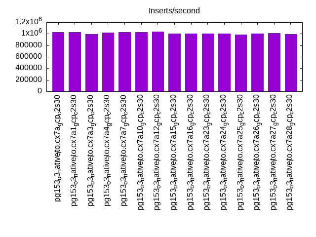
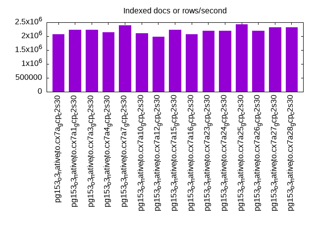
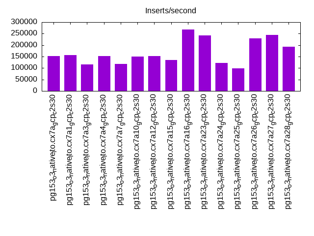
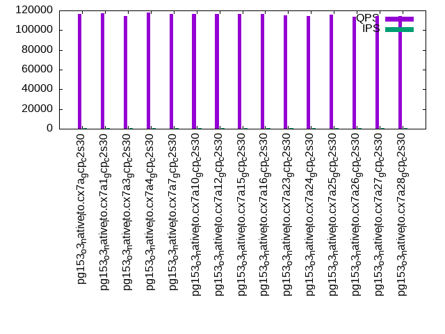
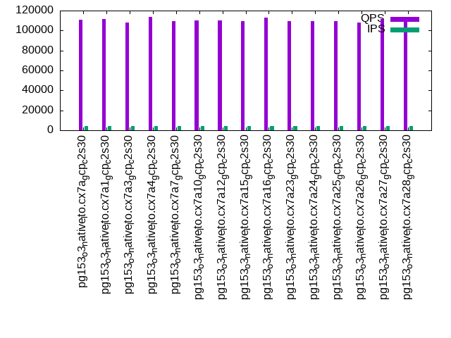
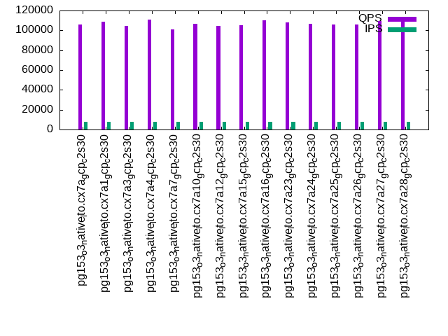

This is a report for the insert benchmark with 160M docs and 8 client(s). It is generated by scripts (bash, awk, sed) and Tufte might not be impressed. An overview of the insert benchmark is here and a short update is here. Below, by DBMS, I mean DBMS+version.config. An example is my8020.c10b40 where my means MySQL, 8020 is version 8.0.20 and c10b40 is the name for the configuration file.
The test server is a c2-standard-30 with 15 cores, hyperthreads disabled, 120G RAM and XFS with SW RAID 0 across 4 NVMe SSD. The benchmark was run with 8 clients and there were 1 or 3 connections per client (1 for queries or inserts without rate limits, 1+1 for rate limited inserts+deletes). It uses 8 tables, 1 per client. It loads 20M rows per table without secondary indexes, creates secondary indexes, then inserts 200M rows per table with a delete per insert to avoid growing the table. It then does 3 read+write tests for 3600s each that do queries as fast as possible with 100, 500 and then 1000 inserts/second/client concurrent with the queries. There are also deletes to match the inserts and avoid growing the table. The database is cached by Postgres. Clients and the DBMS share one server. The per-database configs are in the per-database subdirectories here.
The tested DBMS are:
The numbers are inserts/s for l.i0 and l.i1, indexed docs (or rows) /s for l.x and queries/s for q*.2. The values are the average rate over the entire test for inserts (IPS) and queries (QPS). The range of values for IPS and QPS is split into 3 parts: bottom 25%, middle 50%, top 25%. Values in the bottom 25% have a red background, values in the top 25% have a green background and values in the middle have no color. A gray background is used for values that can be ignored because the DBMS did not sustain the target insert rate. Red backgrounds are not used when the minimum value is within 80% of the max value.
| dbms | l.i0 | l.x | l.i1 | q100.1 | q500.1 | q1000.1 |
|---|---|---|---|---|---|---|
| pg153_o3_native_lto.cx7a_gcp_c2s30 | 1032258 | 2079221 | 152570 | 116289 | 111165 | 106051 |
| pg153_o3_native_lto.cx7a1_gcp_c2s30 | 1025641 | 2223611 | 155885 | 117317 | 111758 | 108494 |
| pg153_o3_native_lto.cx7a3_gcp_c2s30 | 993789 | 2223611 | 115816 | 114069 | 108054 | 104252 |
| pg153_o3_native_lto.cx7a4_gcp_c2s30 | 1019108 | 2134667 | 152964 | 117815 | 113994 | 110837 |
| pg153_o3_native_lto.cx7a7_gcp_c2s30 | 1032258 | 2389552 | 117578 | 116671 | 109604 | 101037 |
| pg153_o3_native_lto.cx7a10_gcp_c2s30 | 1032258 | 2106579 | 150730 | 116194 | 110323 | 106918 |
| pg153_o3_native_lto.cx7a12_gcp_c2s30 | 1038961 | 1976543 | 152352 | 116460 | 109880 | 104373 |
| pg153_o3_native_lto.cx7a15_gcp_c2s30 | 1000000 | 2223611 | 135720 | 116272 | 109415 | 105096 |
| pg153_o3_native_lto.cx7a16_gcp_c2s30 | 1006289 | 2079221 | 268141 | 116173 | 113005 | 110225 |
| pg153_o3_native_lto.cx7a23_gcp_c2s30 | 1000000 | 2193151 | 243087 | 114857 | 109516 | 107793 |
| pg153_o3_native_lto.cx7a24_gcp_c2s30 | 1000000 | 2193151 | 123134 | 114497 | 109200 | 106769 |
| pg153_o3_native_lto.cx7a25_gcp_c2s30 | 981595 | 2425758 | 97632 | 115654 | 109109 | 105638 |
| pg153_o3_native_lto.cx7a26_gcp_c2s30 | 1000000 | 2193151 | 230150 | 113439 | 108286 | 105756 |
| pg153_o3_native_lto.cx7a27_gcp_c2s30 | 1012658 | 2320290 | 244200 | 114462 | 111191 | 109159 |
| pg153_o3_native_lto.cx7a28_gcp_c2s30 | 993789 | 2320290 | 192031 | 114191 | 110447 | 108412 |
This table has relative throughput, throughput for the DBMS relative to the DBMS in the first line, using the absolute throughput from the previous table. Values less than 0.95 have a yellow background. Values greater than 1.05 have a blue background.
| dbms | l.i0 | l.x | l.i1 | q100.1 | q500.1 | q1000.1 |
|---|---|---|---|---|---|---|
| pg153_o3_native_lto.cx7a_gcp_c2s30 | 1.00 | 1.00 | 1.00 | 1.00 | 1.00 | 1.00 |
| pg153_o3_native_lto.cx7a1_gcp_c2s30 | 0.99 | 1.07 | 1.02 | 1.01 | 1.01 | 1.02 |
| pg153_o3_native_lto.cx7a3_gcp_c2s30 | 0.96 | 1.07 | 0.76 | 0.98 | 0.97 | 0.98 |
| pg153_o3_native_lto.cx7a4_gcp_c2s30 | 0.99 | 1.03 | 1.00 | 1.01 | 1.03 | 1.05 |
| pg153_o3_native_lto.cx7a7_gcp_c2s30 | 1.00 | 1.15 | 0.77 | 1.00 | 0.99 | 0.95 |
| pg153_o3_native_lto.cx7a10_gcp_c2s30 | 1.00 | 1.01 | 0.99 | 1.00 | 0.99 | 1.01 |
| pg153_o3_native_lto.cx7a12_gcp_c2s30 | 1.01 | 0.95 | 1.00 | 1.00 | 0.99 | 0.98 |
| pg153_o3_native_lto.cx7a15_gcp_c2s30 | 0.97 | 1.07 | 0.89 | 1.00 | 0.98 | 0.99 |
| pg153_o3_native_lto.cx7a16_gcp_c2s30 | 0.97 | 1.00 | 1.76 | 1.00 | 1.02 | 1.04 |
| pg153_o3_native_lto.cx7a23_gcp_c2s30 | 0.97 | 1.05 | 1.59 | 0.99 | 0.99 | 1.02 |
| pg153_o3_native_lto.cx7a24_gcp_c2s30 | 0.97 | 1.05 | 0.81 | 0.98 | 0.98 | 1.01 |
| pg153_o3_native_lto.cx7a25_gcp_c2s30 | 0.95 | 1.17 | 0.64 | 0.99 | 0.98 | 1.00 |
| pg153_o3_native_lto.cx7a26_gcp_c2s30 | 0.97 | 1.05 | 1.51 | 0.98 | 0.97 | 1.00 |
| pg153_o3_native_lto.cx7a27_gcp_c2s30 | 0.98 | 1.12 | 1.60 | 0.98 | 1.00 | 1.03 |
| pg153_o3_native_lto.cx7a28_gcp_c2s30 | 0.96 | 1.12 | 1.26 | 0.98 | 0.99 | 1.02 |
This lists the average rate of inserts/s for the tests that do inserts concurrent with queries. For such tests the query rate is listed in the table above. The read+write tests are setup so that the insert rate should match the target rate every second. Cells that are not at least 95% of the target have a red background to indicate a failure to satisfy the target.
| dbms | q100.1 | q500.1 | q1000.1 |
|---|---|---|---|
| pg153_o3_native_lto.cx7a_gcp_c2s30 | 797 | 3983 | 7971 |
| pg153_o3_native_lto.cx7a1_gcp_c2s30 | 798 | 3976 | 7956 |
| pg153_o3_native_lto.cx7a3_gcp_c2s30 | 798 | 3987 | 7976 |
| pg153_o3_native_lto.cx7a4_gcp_c2s30 | 797 | 3988 | 7973 |
| pg153_o3_native_lto.cx7a7_gcp_c2s30 | 797 | 3971 | 7910 |
| pg153_o3_native_lto.cx7a10_gcp_c2s30 | 797 | 3962 | 7962 |
| pg153_o3_native_lto.cx7a12_gcp_c2s30 | 797 | 3976 | 7958 |
| pg153_o3_native_lto.cx7a15_gcp_c2s30 | 798 | 3972 | 7973 |
| pg153_o3_native_lto.cx7a16_gcp_c2s30 | 797 | 3980 | 7951 |
| pg153_o3_native_lto.cx7a23_gcp_c2s30 | 798 | 3987 | 7976 |
| pg153_o3_native_lto.cx7a24_gcp_c2s30 | 798 | 3987 | 7976 |
| pg153_o3_native_lto.cx7a25_gcp_c2s30 | 797 | 3988 | 7976 |
| pg153_o3_native_lto.cx7a26_gcp_c2s30 | 797 | 3987 | 7976 |
| pg153_o3_native_lto.cx7a27_gcp_c2s30 | 798 | 3987 | 7978 |
| pg153_o3_native_lto.cx7a28_gcp_c2s30 | 797 | 3988 | 7976 |
| target | 800 | 4000 | 8000 |
l.i0: load without secondary indexes. Graphs for performance per 1-second interval are here.
Average throughput:
Insert response time histogram: each cell has the percentage of responses that take <= the time in the header and max is the max response time in seconds. For the max column values in the top 25% of the range have a red background and in the bottom 25% of the range have a green background. The red background is not used when the min value is within 80% of the max value.
| dbms | 256us | 1ms | 4ms | 16ms | 64ms | 256ms | 1s | 4s | 16s | gt | max |
|---|---|---|---|---|---|---|---|---|---|---|---|
| pg153_o3_native_lto.cx7a_gcp_c2s30 | 97.761 | 2.181 | 0.043 | 0.009 | 0.006 | 0.001 | 0.375 | ||||
| pg153_o3_native_lto.cx7a1_gcp_c2s30 | 97.611 | 2.327 | 0.045 | 0.007 | 0.009 | 0.001 | 0.771 | ||||
| pg153_o3_native_lto.cx7a3_gcp_c2s30 | 97.958 | 1.980 | 0.042 | 0.004 | 0.013 | 0.003 | 0.413 | ||||
| pg153_o3_native_lto.cx7a4_gcp_c2s30 | 97.614 | 2.320 | 0.045 | 0.014 | 0.007 | 0.001 | 0.288 | ||||
| pg153_o3_native_lto.cx7a7_gcp_c2s30 | 97.647 | 2.295 | 0.042 | 0.010 | 0.006 | 0.177 | |||||
| pg153_o3_native_lto.cx7a10_gcp_c2s30 | 97.714 | 2.235 | 0.042 | 0.004 | 0.005 | 0.252 | |||||
| pg153_o3_native_lto.cx7a12_gcp_c2s30 | 97.535 | 2.429 | 0.036 | nonzero | 0.027 | ||||||
| pg153_o3_native_lto.cx7a15_gcp_c2s30 | 97.261 | 2.592 | 0.113 | 0.025 | 0.009 | 0.001 | 0.291 | ||||
| pg153_o3_native_lto.cx7a16_gcp_c2s30 | 97.382 | 2.555 | 0.046 | 0.008 | 0.008 | 0.001 | 0.488 | ||||
| pg153_o3_native_lto.cx7a23_gcp_c2s30 | 97.966 | 1.967 | 0.044 | 0.006 | 0.016 | 0.002 | 0.292 | ||||
| pg153_o3_native_lto.cx7a24_gcp_c2s30 | 97.785 | 2.148 | 0.045 | 0.004 | 0.015 | 0.003 | 0.486 | ||||
| pg153_o3_native_lto.cx7a25_gcp_c2s30 | 97.440 | 2.442 | 0.088 | 0.012 | 0.014 | 0.003 | 0.480 | ||||
| pg153_o3_native_lto.cx7a26_gcp_c2s30 | 97.753 | 2.178 | 0.047 | 0.004 | 0.015 | 0.002 | 0.338 | ||||
| pg153_o3_native_lto.cx7a27_gcp_c2s30 | 97.978 | 1.962 | 0.050 | 0.001 | 0.007 | 0.003 | 0.292 | ||||
| pg153_o3_native_lto.cx7a28_gcp_c2s30 | 97.528 | 2.416 | 0.043 | 0.001 | 0.011 | 0.002 | 0.286 |
Performance metrics for the DBMS listed above. Some are normalized by throughput, others are not. Legend for results is here.
ips qps rps rmbps wps wmbps rpq rkbpq wpi wkbpi csps cpups cspq cpupq dbgb1 dbgb2 rss maxop p50 p99 tag 1032258 0 0 0.0 1012.9 333.7 0.000 0.000 0.001 0.331 83451 77.5 0.081 11 15.3 41.4 0.0 0.375 146140 61133 160m.pg153_o3_native_lto.cx7a_gcp_c2s30 1025641 0 0 0.0 1010.8 333.4 0.000 0.000 0.001 0.333 83894 77.1 0.082 11 15.3 41.4 0.0 0.771 146296 39656 160m.pg153_o3_native_lto.cx7a1_gcp_c2s30 993789 0 0 0.0 972.3 321.9 0.000 0.000 0.001 0.332 84544 75.8 0.085 11 15.3 41.4 4.5 0.413 143444 30467 160m.pg153_o3_native_lto.cx7a3_gcp_c2s30 1019108 0 0 0.0 1018.7 334.1 0.000 0.000 0.001 0.336 83993 77.4 0.082 11 15.3 41.4 0.0 0.288 144941 58635 160m.pg153_o3_native_lto.cx7a4_gcp_c2s30 1032258 0 0 0.0 1214.9 321.0 0.000 0.000 0.001 0.318 84926 77.7 0.082 11 15.3 31.4 0.0 0.177 145141 94496 160m.pg153_o3_native_lto.cx7a7_gcp_c2s30 1032258 0 0 0.0 1030.4 335.2 0.000 0.000 0.001 0.333 83696 77.6 0.081 11 15.3 41.4 0.0 0.252 145241 89037 160m.pg153_o3_native_lto.cx7a10_gcp_c2s30 1038961 0 0 0.0 1037.5 342.7 0.000 0.000 0.001 0.338 85142 79.5 0.082 11 15.3 41.4 0.0 0.027 144740 136147 160m.pg153_o3_native_lto.cx7a12_gcp_c2s30 1000000 0 0 0.0 1191.9 371.1 0.000 0.000 0.001 0.380 81952 75.9 0.082 11 15.3 42.7 0.0 0.291 144042 58735 160m.pg153_o3_native_lto.cx7a15_gcp_c2s30 1006289 0 0 0.0 1021.1 335.0 0.000 0.000 0.001 0.341 84203 77.2 0.084 12 15.3 41.4 0.0 0.488 144342 45068 160m.pg153_o3_native_lto.cx7a16_gcp_c2s30 1000000 0 0 0.0 973.8 324.6 0.000 0.000 0.001 0.332 83994 75.6 0.084 11 15.3 41.4 4.9 0.292 144494 35361 160m.pg153_o3_native_lto.cx7a23_gcp_c2s30 1000000 0 0 0.0 974.6 323.4 0.000 0.000 0.001 0.331 84215 75.4 0.084 11 15.3 41.4 1.7 0.486 144744 32665 160m.pg153_o3_native_lto.cx7a24_gcp_c2s30 981595 0 0 0.0 1179.9 366.7 0.000 0.000 0.001 0.383 82878 75.9 0.084 12 15.3 42.4 8.7 0.480 142646 34463 160m.pg153_o3_native_lto.cx7a25_gcp_c2s30 1000000 0 0 0.0 974.0 322.8 0.000 0.000 0.001 0.331 84166 75.5 0.084 11 15.3 41.4 4.5 0.338 144291 43153 160m.pg153_o3_native_lto.cx7a26_gcp_c2s30 1012658 0 0 0.0 997.0 332.9 0.000 0.000 0.001 0.337 85486 77.6 0.084 11 15.3 41.4 5.4 0.292 143445 43268 160m.pg153_o3_native_lto.cx7a27_gcp_c2s30 993789 0 0 0.0 1148.8 363.0 0.000 0.000 0.001 0.374 83559 76.0 0.084 11 15.3 41.9 6.4 0.286 143145 47948 160m.pg153_o3_native_lto.cx7a28_gcp_c2s30
l.x: create secondary indexes.
Average throughput:
Performance metrics for the DBMS listed above. Some are normalized by throughput, others are not. Legend for results is here.
ips qps rps rmbps wps wmbps rpq rkbpq wpi wkbpi csps cpups cspq cpupq dbgb1 dbgb2 rss maxop p50 p99 tag 2079221 0 0 0.0 1513.3 635.7 0.000 0.000 0.001 0.313 14879 36.1 0.007 3 29.4 68.3 0.1 0.001 NA NA 160m.pg153_o3_native_lto.cx7a_gcp_c2s30 2223611 0 0 0.0 1267.8 549.3 0.000 0.000 0.001 0.253 7304 39.5 0.003 3 29.4 63.3 0.1 0.001 NA NA 160m.pg153_o3_native_lto.cx7a1_gcp_c2s30 2223611 0 0 0.0 1222.1 541.7 0.000 0.000 0.001 0.249 16669 38.6 0.007 3 29.4 68.3 13.1 0.002 NA NA 160m.pg153_o3_native_lto.cx7a3_gcp_c2s30 2134667 0 0 0.0 1567.1 646.6 0.000 0.000 0.001 0.310 15630 36.4 0.007 3 29.4 68.3 0.1 0.001 NA NA 160m.pg153_o3_native_lto.cx7a4_gcp_c2s30 2389552 0 0 0.0 1615.8 514.6 0.000 0.000 0.001 0.221 22509 41.0 0.009 3 29.4 45.5 0.1 0.001 NA NA 160m.pg153_o3_native_lto.cx7a7_gcp_c2s30 2106579 0 0 0.0 1553.9 644.4 0.000 0.000 0.001 0.313 16220 36.2 0.008 3 29.4 68.3 0.1 0.001 NA NA 160m.pg153_o3_native_lto.cx7a10_gcp_c2s30 1976543 0 0 0.0 1456.1 602.1 0.000 0.000 0.001 0.312 15207 34.3 0.008 3 29.4 68.3 0.1 0.002 NA NA 160m.pg153_o3_native_lto.cx7a12_gcp_c2s30 2223611 0 0 0.0 1683.2 557.3 0.000 0.000 0.001 0.257 24947 38.8 0.011 3 29.4 61.5 0.1 0.002 NA NA 160m.pg153_o3_native_lto.cx7a15_gcp_c2s30 2079221 0 0 0.0 1504.3 639.6 0.000 0.000 0.001 0.315 17905 36.3 0.009 3 29.4 68.3 0.1 0.001 NA NA 160m.pg153_o3_native_lto.cx7a16_gcp_c2s30 2193151 0 0 0.0 1213.1 541.6 0.000 0.000 0.001 0.253 17764 38.0 0.008 3 29.4 68.3 13.1 0.002 NA NA 160m.pg153_o3_native_lto.cx7a23_gcp_c2s30 2193151 0 0 0.0 1217.4 543.0 0.000 0.000 0.001 0.254 17367 38.3 0.008 3 29.4 68.3 13.1 0.002 NA NA 160m.pg153_o3_native_lto.cx7a24_gcp_c2s30 2425758 0 0 0.0 1329.1 514.9 0.000 0.000 0.001 0.217 14155 41.0 0.006 3 29.4 59.5 13.0 0.002 NA NA 160m.pg153_o3_native_lto.cx7a25_gcp_c2s30 2193151 0 0 0.0 1217.4 540.2 0.000 0.000 0.001 0.252 16131 38.1 0.007 3 29.4 68.3 13.1 0.002 NA NA 160m.pg153_o3_native_lto.cx7a26_gcp_c2s30 2320290 0 0 0.0 893.6 403.2 0.000 0.000 0.000 0.178 8089 41.7 0.003 3 29.4 63.3 13.2 0.002 NA NA 160m.pg153_o3_native_lto.cx7a27_gcp_c2s30 2320290 0 0 0.0 1290.8 492.4 0.000 0.000 0.001 0.217 19743 40.9 0.009 3 29.4 61.5 13.1 0.002 NA NA 160m.pg153_o3_native_lto.cx7a28_gcp_c2s30
l.i1: continue load after secondary indexes created. Graphs for performance per 1-second interval are here.
Average throughput:
Insert response time histogram: each cell has the percentage of responses that take <= the time in the header and max is the max response time in seconds. For the max column values in the top 25% of the range have a red background and in the bottom 25% of the range have a green background. The red background is not used when the min value is within 80% of the max value.
| dbms | 256us | 1ms | 4ms | 16ms | 64ms | 256ms | 1s | 4s | 16s | gt | max |
|---|---|---|---|---|---|---|---|---|---|---|---|
| pg153_o3_native_lto.cx7a_gcp_c2s30 | 47.500 | 52.256 | 0.200 | 0.043 | nonzero | nonzero | nonzero | nonzero | 5.816 | ||
| pg153_o3_native_lto.cx7a1_gcp_c2s30 | 46.251 | 53.666 | 0.072 | 0.010 | nonzero | nonzero | nonzero | nonzero | 5.368 | ||
| pg153_o3_native_lto.cx7a3_gcp_c2s30 | 0.189 | 99.794 | 0.016 | 0.001 | nonzero | nonzero | 0.293 | ||||
| pg153_o3_native_lto.cx7a4_gcp_c2s30 | 45.240 | 54.443 | 0.256 | 0.061 | nonzero | nonzero | nonzero | nonzero | 6.006 | ||
| pg153_o3_native_lto.cx7a7_gcp_c2s30 | 26.677 | 70.402 | 1.721 | 1.195 | 0.003 | nonzero | nonzero | nonzero | 6.082 | ||
| pg153_o3_native_lto.cx7a10_gcp_c2s30 | 44.882 | 54.765 | 0.281 | 0.072 | nonzero | nonzero | nonzero | nonzero | 5.314 | ||
| pg153_o3_native_lto.cx7a12_gcp_c2s30 | 42.440 | 57.397 | 0.094 | 0.066 | 0.002 | nonzero | nonzero | 5.224 | |||
| pg153_o3_native_lto.cx7a15_gcp_c2s30 | 30.417 | 68.222 | 1.140 | 0.218 | 0.001 | nonzero | 0.001 | nonzero | 5.863 | ||
| pg153_o3_native_lto.cx7a16_gcp_c2s30 | 32.197 | 66.972 | 0.665 | 0.167 | nonzero | nonzero | nonzero | 2.718 | |||
| pg153_o3_native_lto.cx7a23_gcp_c2s30 | 0.155 | 99.019 | 0.675 | 0.150 | 0.001 | 0.148 | |||||
| pg153_o3_native_lto.cx7a24_gcp_c2s30 | 0.123 | 99.661 | 0.181 | 0.034 | 0.001 | nonzero | 0.277 | ||||
| pg153_o3_native_lto.cx7a25_gcp_c2s30 | 0.263 | 99.042 | 0.581 | 0.106 | 0.008 | 0.240 | |||||
| pg153_o3_native_lto.cx7a26_gcp_c2s30 | 0.306 | 98.887 | 0.661 | 0.145 | 0.001 | 0.176 | |||||
| pg153_o3_native_lto.cx7a27_gcp_c2s30 | 0.045 | 99.733 | 0.160 | 0.059 | 0.004 | 0.167 | |||||
| pg153_o3_native_lto.cx7a28_gcp_c2s30 | 0.271 | 98.672 | 0.430 | 0.578 | 0.048 | 0.183 |
Delete response time histogram: each cell has the percentage of responses that take <= the time in the header and max is the max response time in seconds. For the max column values in the top 25% of the range have a red background and in the bottom 25% of the range have a green background. The red background is not used when the min value is within 80% of the max value.
| dbms | 256us | 1ms | 4ms | 16ms | 64ms | 256ms | 1s | 4s | 16s | gt | max |
|---|---|---|---|---|---|---|---|---|---|---|---|
| pg153_o3_native_lto.cx7a_gcp_c2s30 | 83.652 | 2.855 | 1.883 | 7.554 | 4.055 | nonzero | nonzero | nonzero | nonzero | 5.828 | |
| pg153_o3_native_lto.cx7a1_gcp_c2s30 | 83.135 | 3.289 | 2.133 | 7.328 | 4.114 | nonzero | nonzero | nonzero | nonzero | 5.384 | |
| pg153_o3_native_lto.cx7a3_gcp_c2s30 | 84.490 | 1.732 | 2.055 | 4.912 | 6.811 | nonzero | nonzero | 0.302 | |||
| pg153_o3_native_lto.cx7a4_gcp_c2s30 | 83.262 | 3.171 | 1.989 | 7.461 | 4.117 | 0.001 | nonzero | nonzero | nonzero | 6.027 | |
| pg153_o3_native_lto.cx7a7_gcp_c2s30 | 80.744 | 3.656 | 1.682 | 8.033 | 5.860 | 0.024 | nonzero | 0.001 | 0.001 | 6.093 | |
| pg153_o3_native_lto.cx7a10_gcp_c2s30 | 83.285 | 3.182 | 1.917 | 7.558 | 4.057 | 0.001 | nonzero | nonzero | nonzero | 5.323 | |
| pg153_o3_native_lto.cx7a12_gcp_c2s30 | 83.152 | 3.200 | 1.989 | 7.514 | 4.140 | 0.005 | nonzero | nonzero | 5.236 | ||
| pg153_o3_native_lto.cx7a15_gcp_c2s30 | 81.059 | 4.391 | 1.596 | 8.403 | 4.547 | 0.001 | nonzero | 0.001 | 0.001 | 5.876 | |
| pg153_o3_native_lto.cx7a16_gcp_c2s30 | 77.745 | 9.038 | 10.831 | 2.294 | 0.092 | nonzero | nonzero | nonzero | 2.719 | ||
| pg153_o3_native_lto.cx7a23_gcp_c2s30 | 79.380 | 7.188 | 11.007 | 2.351 | 0.073 | 0.001 | 0.147 | ||||
| pg153_o3_native_lto.cx7a24_gcp_c2s30 | 84.164 | 1.881 | 2.334 | 5.324 | 6.295 | 0.001 | nonzero | 0.285 | |||
| pg153_o3_native_lto.cx7a25_gcp_c2s30 | 83.720 | 2.495 | 0.706 | 4.656 | 8.406 | 0.017 | nonzero | 0.273 | |||
| pg153_o3_native_lto.cx7a26_gcp_c2s30 | 79.024 | 7.253 | 11.106 | 2.543 | 0.073 | 0.001 | 0.176 | ||||
| pg153_o3_native_lto.cx7a27_gcp_c2s30 | 78.542 | 8.042 | 11.369 | 2.028 | 0.018 | 0.002 | 0.173 | ||||
| pg153_o3_native_lto.cx7a28_gcp_c2s30 | 76.229 | 9.290 | 10.471 | 3.642 | 0.334 | 0.033 | 0.186 |
Performance metrics for the DBMS listed above. Some are normalized by throughput, others are not. Legend for results is here.
ips qps rps rmbps wps wmbps rpq rkbpq wpi wkbpi csps cpups cspq cpupq dbgb1 dbgb2 rss maxop p50 p99 tag 152570 0 30 0.2 1697.5 192.7 0.000 0.002 0.011 1.294 67471 65.8 0.442 65 48.9 118.9 0.0 5.816 4395 2048 160m.pg153_o3_native_lto.cx7a_gcp_c2s30 155885 0 1 0.0 1506.6 151.7 0.000 0.000 0.010 0.996 68761 67.8 0.441 65 48.9 119.0 0.0 5.368 4545 2098 160m.pg153_o3_native_lto.cx7a1_gcp_c2s30 115816 0 0 0.0 1336.2 112.3 0.000 0.000 0.012 0.993 53698 62.6 0.464 81 48.7 81.5 30.7 0.293 3197 1548 160m.pg153_o3_native_lto.cx7a3_gcp_c2s30 152964 0 28 0.2 1721.5 193.9 0.000 0.001 0.011 1.298 67535 66.1 0.442 65 49.2 119.2 0.0 6.006 4844 2099 160m.pg153_o3_native_lto.cx7a4_gcp_c2s30 117578 0 2 0.0 14919.4 817.0 0.000 0.000 0.127 7.115 50916 59.0 0.433 75 48.9 64.9 0.0 6.082 4247 0 160m.pg153_o3_native_lto.cx7a7_gcp_c2s30 150730 0 27 0.2 1702.1 191.8 0.000 0.001 0.011 1.303 66301 65.0 0.440 65 49.0 119.1 0.0 5.314 4495 2048 160m.pg153_o3_native_lto.cx7a10_gcp_c2s30 152352 0 28 0.2 1722.1 194.8 0.000 0.001 0.011 1.309 67249 66.2 0.441 65 49.0 119.1 0.0 5.224 4345 1948 160m.pg153_o3_native_lto.cx7a12_gcp_c2s30 135720 0 11 0.1 10363.7 585.2 0.000 0.001 0.076 4.416 58169 65.0 0.429 72 49.2 81.2 0.0 5.863 4245 0 160m.pg153_o3_native_lto.cx7a15_gcp_c2s30 268141 0 50 0.4 1741.9 275.8 0.000 0.001 0.006 1.053 101787 74.4 0.380 42 42.0 112.0 0.0 2.718 41504 4995 160m.pg153_o3_native_lto.cx7a16_gcp_c2s30 243087 0 0 0.0 1545.7 252.5 0.000 0.000 0.006 1.064 96138 76.0 0.395 47 42.0 112.1 36.5 0.148 36760 5096 160m.pg153_o3_native_lto.cx7a23_gcp_c2s30 123134 0 0 0.0 1395.9 158.2 0.000 0.000 0.011 1.316 56494 64.7 0.459 79 48.9 118.9 30.9 0.277 3298 1598 160m.pg153_o3_native_lto.cx7a24_gcp_c2s30 97632 0 0 0.0 10671.6 450.5 0.000 0.000 0.109 4.725 46966 62.2 0.481 96 49.1 79.2 19.8 0.240 2297 1199 160m.pg153_o3_native_lto.cx7a25_gcp_c2s30 230150 0 0 0.0 1413.3 236.4 0.000 0.000 0.006 1.052 90563 73.9 0.393 48 41.6 111.7 23.0 0.176 35462 4647 160m.pg153_o3_native_lto.cx7a26_gcp_c2s30 244200 0 0 0.0 1174.9 192.3 0.000 0.000 0.005 0.807 95317 78.3 0.390 48 41.8 111.9 30.8 0.167 35584 6992 160m.pg153_o3_native_lto.cx7a27_gcp_c2s30 192031 0 0 0.0 10420.6 898.6 0.000 0.000 0.054 4.792 76084 69.3 0.396 54 41.4 73.5 34.4 0.183 29320 2448 160m.pg153_o3_native_lto.cx7a28_gcp_c2s30
q100.1: range queries with 100 insert/s per client. Graphs for performance per 1-second interval are here.
Average throughput:
Query response time histogram: each cell has the percentage of responses that take <= the time in the header and max is the max response time in seconds. For max values in the top 25% of the range have a red background and in the bottom 25% of the range have a green background. The red background is not used when the min value is within 80% of the max value.
| dbms | 256us | 1ms | 4ms | 16ms | 64ms | 256ms | 1s | 4s | 16s | gt | max |
|---|---|---|---|---|---|---|---|---|---|---|---|
| pg153_o3_native_lto.cx7a_gcp_c2s30 | 99.995 | 0.004 | 0.001 | nonzero | 0.006 | ||||||
| pg153_o3_native_lto.cx7a1_gcp_c2s30 | 99.996 | 0.003 | 0.001 | nonzero | 0.010 | ||||||
| pg153_o3_native_lto.cx7a3_gcp_c2s30 | 99.997 | 0.002 | 0.001 | nonzero | 0.007 | ||||||
| pg153_o3_native_lto.cx7a4_gcp_c2s30 | 99.996 | 0.003 | 0.001 | nonzero | 0.008 | ||||||
| pg153_o3_native_lto.cx7a7_gcp_c2s30 | 99.996 | 0.004 | 0.001 | nonzero | nonzero | 3.490 | |||||
| pg153_o3_native_lto.cx7a10_gcp_c2s30 | 99.995 | 0.004 | 0.001 | nonzero | nonzero | 4.778 | |||||
| pg153_o3_native_lto.cx7a12_gcp_c2s30 | 99.995 | 0.004 | 0.001 | nonzero | 0.008 | ||||||
| pg153_o3_native_lto.cx7a15_gcp_c2s30 | 99.995 | 0.004 | 0.001 | nonzero | 0.014 | ||||||
| pg153_o3_native_lto.cx7a16_gcp_c2s30 | 99.995 | 0.004 | 0.001 | nonzero | 0.007 | ||||||
| pg153_o3_native_lto.cx7a23_gcp_c2s30 | 99.995 | 0.004 | 0.001 | nonzero | 0.011 | ||||||
| pg153_o3_native_lto.cx7a24_gcp_c2s30 | 99.995 | 0.004 | 0.001 | nonzero | 0.014 | ||||||
| pg153_o3_native_lto.cx7a25_gcp_c2s30 | 99.995 | 0.004 | 0.001 | nonzero | 0.011 | ||||||
| pg153_o3_native_lto.cx7a26_gcp_c2s30 | 99.996 | 0.004 | 0.001 | nonzero | 0.006 | ||||||
| pg153_o3_native_lto.cx7a27_gcp_c2s30 | 99.996 | 0.003 | 0.001 | nonzero | 0.010 | ||||||
| pg153_o3_native_lto.cx7a28_gcp_c2s30 | 99.996 | 0.003 | 0.001 | nonzero | 0.006 |
Insert response time histogram: each cell has the percentage of responses that take <= the time in the header and max is the max response time in seconds. For max values in the top 25% of the range have a red background and in the bottom 25% of the range have a green background. The red background is not used when the min value is within 80% of the max value.
| dbms | 256us | 1ms | 4ms | 16ms | 64ms | 256ms | 1s | 4s | 16s | gt | max |
|---|---|---|---|---|---|---|---|---|---|---|---|
| pg153_o3_native_lto.cx7a_gcp_c2s30 | 0.523 | 99.474 | 0.003 | 0.006 | |||||||
| pg153_o3_native_lto.cx7a1_gcp_c2s30 | 0.406 | 99.477 | 0.116 | 0.006 | |||||||
| pg153_o3_native_lto.cx7a3_gcp_c2s30 | 99.964 | 0.036 | 0.006 | ||||||||
| pg153_o3_native_lto.cx7a4_gcp_c2s30 | 9.774 | 90.224 | 0.002 | 0.011 | |||||||
| pg153_o3_native_lto.cx7a7_gcp_c2s30 | 0.007 | 99.950 | 0.030 | 0.014 | 3.508 | ||||||
| pg153_o3_native_lto.cx7a10_gcp_c2s30 | 0.231 | 99.715 | 0.040 | 0.009 | 0.005 | 4.785 | |||||
| pg153_o3_native_lto.cx7a12_gcp_c2s30 | 0.384 | 99.611 | 0.005 | 0.012 | |||||||
| pg153_o3_native_lto.cx7a15_gcp_c2s30 | 0.184 | 99.797 | 0.019 | 0.014 | |||||||
| pg153_o3_native_lto.cx7a16_gcp_c2s30 | 0.375 | 99.623 | 0.002 | 0.005 | |||||||
| pg153_o3_native_lto.cx7a23_gcp_c2s30 | 99.920 | 0.080 | 0.007 | ||||||||
| pg153_o3_native_lto.cx7a24_gcp_c2s30 | 99.953 | 0.047 | 0.006 | ||||||||
| pg153_o3_native_lto.cx7a25_gcp_c2s30 | 99.866 | 0.134 | 0.009 | ||||||||
| pg153_o3_native_lto.cx7a26_gcp_c2s30 | 99.922 | 0.078 | 0.007 | ||||||||
| pg153_o3_native_lto.cx7a27_gcp_c2s30 | 99.840 | 0.160 | 0.007 | ||||||||
| pg153_o3_native_lto.cx7a28_gcp_c2s30 | 99.953 | 0.047 | 0.006 |
Delete response time histogram: each cell has the percentage of responses that take <= the time in the header and max is the max response time in seconds. For max values in the top 25% of the range have a red background and in the bottom 25% of the range have a green background. The red background is not used when the min value is within 80% of the max value.
| dbms | 256us | 1ms | 4ms | 16ms | 64ms | 256ms | 1s | 4s | 16s | gt | max |
|---|---|---|---|---|---|---|---|---|---|---|---|
| pg153_o3_native_lto.cx7a_gcp_c2s30 | 64.599 | 29.439 | 5.962 | 0.003 | |||||||
| pg153_o3_native_lto.cx7a1_gcp_c2s30 | 48.462 | 17.701 | 33.792 | 0.042 | 0.003 | 0.017 | |||||
| pg153_o3_native_lto.cx7a3_gcp_c2s30 | 62.057 | 17.576 | 18.003 | 2.363 | 0.010 | ||||||
| pg153_o3_native_lto.cx7a4_gcp_c2s30 | 65.722 | 25.528 | 8.750 | 0.003 | |||||||
| pg153_o3_native_lto.cx7a7_gcp_c2s30 | 53.391 | 37.681 | 8.901 | 0.014 | 0.014 | 3.493 | |||||
| pg153_o3_native_lto.cx7a10_gcp_c2s30 | 65.868 | 21.363 | 12.745 | 0.009 | 0.002 | 0.010 | 0.003 | 4.779 | |||
| pg153_o3_native_lto.cx7a12_gcp_c2s30 | 70.677 | 24.892 | 4.424 | 0.007 | 0.013 | ||||||
| pg153_o3_native_lto.cx7a15_gcp_c2s30 | 67.297 | 19.500 | 13.194 | 0.009 | 0.012 | ||||||
| pg153_o3_native_lto.cx7a16_gcp_c2s30 | 53.943 | 28.531 | 17.521 | 0.005 | 0.012 | ||||||
| pg153_o3_native_lto.cx7a23_gcp_c2s30 | 62.960 | 16.071 | 20.950 | 0.019 | 0.005 | ||||||
| pg153_o3_native_lto.cx7a24_gcp_c2s30 | 49.830 | 11.410 | 36.424 | 2.337 | 0.008 | ||||||
| pg153_o3_native_lto.cx7a25_gcp_c2s30 | 50.908 | 22.840 | 26.191 | 0.061 | 0.008 | ||||||
| pg153_o3_native_lto.cx7a26_gcp_c2s30 | 70.812 | 6.785 | 20.462 | 1.941 | 0.009 | ||||||
| pg153_o3_native_lto.cx7a27_gcp_c2s30 | 53.476 | 23.043 | 23.458 | 0.023 | 0.005 | ||||||
| pg153_o3_native_lto.cx7a28_gcp_c2s30 | 56.476 | 14.352 | 26.220 | 2.951 | 0.010 |
Performance metrics for the DBMS listed above. Some are normalized by throughput, others are not. Legend for results is here.
ips qps rps rmbps wps wmbps rpq rkbpq wpi wkbpi csps cpups cspq cpupq dbgb1 dbgb2 rss maxop p50 p99 tag 797 116289 0 0.0 1918.4 30.5 0.000 0.000 2.406 39.174 443378 53.2 3.813 69 48.9 84.6 0.0 0.006 14480 14070 160m.pg153_o3_native_lto.cx7a_gcp_c2s30 798 117317 0 0.0 1936.9 27.3 0.000 0.000 2.429 35.018 447167 53.3 3.812 68 48.9 93.0 0.0 0.010 14704 14240 160m.pg153_o3_native_lto.cx7a1_gcp_c2s30 798 114069 0 0.0 1823.9 22.2 0.000 0.000 2.287 28.558 434378 52.9 3.808 70 48.7 77.2 1.7 0.007 14294 14033 160m.pg153_o3_native_lto.cx7a3_gcp_c2s30 797 117815 0 0.0 233.9 11.9 0.000 0.000 0.293 15.238 448430 53.0 3.806 67 49.2 119.2 0.0 0.008 14736 14496 160m.pg153_o3_native_lto.cx7a4_gcp_c2s30 797 116671 0 0.0 1891.3 29.7 0.000 0.000 2.372 38.129 444847 53.0 3.813 68 48.9 62.4 0.0 3.490 14630 14368 160m.pg153_o3_native_lto.cx7a7_gcp_c2s30 797 116194 0 0.0 1930.6 29.4 0.000 0.000 2.421 37.717 443156 53.1 3.814 69 49.0 83.2 0.0 4.778 14518 14001 160m.pg153_o3_native_lto.cx7a10_gcp_c2s30 797 116460 0 0.0 1959.5 30.2 0.000 0.000 2.458 38.742 444083 53.2 3.813 69 49.0 85.3 0.0 0.008 14470 14070 160m.pg153_o3_native_lto.cx7a12_gcp_c2s30 798 116272 0 0.0 1929.2 30.1 0.000 0.000 2.419 38.596 443323 53.2 3.813 69 49.2 66.1 0.0 0.014 14486 14097 160m.pg153_o3_native_lto.cx7a15_gcp_c2s30 797 116173 0 0.0 1764.9 27.7 0.000 0.000 2.214 35.640 442995 53.1 3.813 69 42.0 75.6 0.0 0.007 14598 14192 160m.pg153_o3_native_lto.cx7a16_gcp_c2s30 798 114857 0 0.0 1780.2 28.4 0.000 0.000 2.232 36.526 437870 52.7 3.812 69 42.0 76.3 13.7 0.011 14305 13841 160m.pg153_o3_native_lto.cx7a23_gcp_c2s30 798 114497 0 0.0 1929.9 29.2 0.000 0.000 2.420 37.465 436659 52.9 3.814 69 48.9 82.6 14.6 0.014 14320 13441 160m.pg153_o3_native_lto.cx7a24_gcp_c2s30 797 115654 0 0.0 2063.4 28.8 0.000 0.000 2.588 36.963 441061 52.8 3.814 68 49.1 64.4 30.4 0.011 14528 14256 160m.pg153_o3_native_lto.cx7a25_gcp_c2s30 797 113439 0 0.0 1800.5 27.9 0.000 0.000 2.258 35.891 432737 52.8 3.815 70 41.6 71.4 13.5 0.006 14177 13665 160m.pg153_o3_native_lto.cx7a26_gcp_c2s30 798 114462 0 0.0 181.4 9.5 0.000 0.000 0.227 12.249 435556 52.9 3.805 69 41.8 111.9 12.4 0.010 14262 14017 160m.pg153_o3_native_lto.cx7a27_gcp_c2s30 797 114191 0 0.0 165.2 9.4 0.000 0.000 0.207 12.133 434712 52.8 3.807 69 41.4 73.5 1.1 0.006 14225 13857 160m.pg153_o3_native_lto.cx7a28_gcp_c2s30
q500.1: range queries with 500 insert/s per client. Graphs for performance per 1-second interval are here.
Average throughput:
Query response time histogram: each cell has the percentage of responses that take <= the time in the header and max is the max response time in seconds. For max values in the top 25% of the range have a red background and in the bottom 25% of the range have a green background. The red background is not used when the min value is within 80% of the max value.
| dbms | 256us | 1ms | 4ms | 16ms | 64ms | 256ms | 1s | 4s | 16s | gt | max |
|---|---|---|---|---|---|---|---|---|---|---|---|
| pg153_o3_native_lto.cx7a_gcp_c2s30 | 99.971 | 0.016 | 0.011 | 0.001 | nonzero | nonzero | nonzero | 2.752 | |||
| pg153_o3_native_lto.cx7a1_gcp_c2s30 | 99.974 | 0.017 | 0.008 | nonzero | nonzero | nonzero | nonzero | nonzero | nonzero | 4.301 | |
| pg153_o3_native_lto.cx7a3_gcp_c2s30 | 99.987 | 0.007 | 0.006 | nonzero | nonzero | 0.021 | |||||
| pg153_o3_native_lto.cx7a4_gcp_c2s30 | 99.983 | 0.010 | 0.007 | nonzero | nonzero | 0.026 | |||||
| pg153_o3_native_lto.cx7a7_gcp_c2s30 | 99.971 | 0.018 | 0.010 | 0.001 | nonzero | nonzero | nonzero | nonzero | 6.044 | ||
| pg153_o3_native_lto.cx7a10_gcp_c2s30 | 99.972 | 0.016 | 0.010 | 0.001 | nonzero | nonzero | nonzero | 4.867 | |||
| pg153_o3_native_lto.cx7a12_gcp_c2s30 | 99.974 | 0.016 | 0.009 | nonzero | nonzero | nonzero | nonzero | 3.704 | |||
| pg153_o3_native_lto.cx7a15_gcp_c2s30 | 99.974 | 0.017 | 0.009 | 0.001 | nonzero | nonzero | nonzero | nonzero | nonzero | 5.108 | |
| pg153_o3_native_lto.cx7a16_gcp_c2s30 | 99.972 | 0.016 | 0.010 | 0.001 | nonzero | nonzero | nonzero | nonzero | 5.008 | ||
| pg153_o3_native_lto.cx7a23_gcp_c2s30 | 99.979 | 0.015 | 0.006 | nonzero | nonzero | 0.062 | |||||
| pg153_o3_native_lto.cx7a24_gcp_c2s30 | 99.977 | 0.016 | 0.007 | nonzero | nonzero | 0.024 | |||||
| pg153_o3_native_lto.cx7a25_gcp_c2s30 | 99.978 | 0.016 | 0.007 | nonzero | nonzero | 0.022 | |||||
| pg153_o3_native_lto.cx7a26_gcp_c2s30 | 99.978 | 0.016 | 0.006 | nonzero | 0.014 | ||||||
| pg153_o3_native_lto.cx7a27_gcp_c2s30 | 99.986 | 0.009 | 0.005 | nonzero | nonzero | nonzero | 0.068 | ||||
| pg153_o3_native_lto.cx7a28_gcp_c2s30 | 99.986 | 0.009 | 0.005 | nonzero | nonzero | 0.058 |
Insert response time histogram: each cell has the percentage of responses that take <= the time in the header and max is the max response time in seconds. For max values in the top 25% of the range have a red background and in the bottom 25% of the range have a green background. The red background is not used when the min value is within 80% of the max value.
| dbms | 256us | 1ms | 4ms | 16ms | 64ms | 256ms | 1s | 4s | 16s | gt | max |
|---|---|---|---|---|---|---|---|---|---|---|---|
| pg153_o3_native_lto.cx7a_gcp_c2s30 | 1.747 | 96.031 | 2.122 | 0.083 | 0.004 | 0.014 | 2.755 | ||||
| pg153_o3_native_lto.cx7a1_gcp_c2s30 | 0.004 | 99.047 | 0.897 | 0.025 | 0.005 | 0.002 | 0.016 | 0.005 | 4.319 | ||
| pg153_o3_native_lto.cx7a3_gcp_c2s30 | 99.884 | 0.114 | 0.001 | 0.024 | |||||||
| pg153_o3_native_lto.cx7a4_gcp_c2s30 | 44.701 | 55.007 | 0.274 | 0.018 | 0.044 | ||||||
| pg153_o3_native_lto.cx7a7_gcp_c2s30 | 0.412 | 97.468 | 1.920 | 0.175 | 0.002 | 0.004 | 0.013 | 0.006 | 6.058 | ||
| pg153_o3_native_lto.cx7a10_gcp_c2s30 | 1.819 | 96.039 | 1.983 | 0.119 | 0.001 | 0.003 | 0.027 | 0.009 | 4.869 | ||
| pg153_o3_native_lto.cx7a12_gcp_c2s30 | 1.844 | 97.818 | 0.277 | 0.017 | 0.008 | 0.008 | 0.028 | 3.722 | |||
| pg153_o3_native_lto.cx7a15_gcp_c2s30 | 2.894 | 96.140 | 0.898 | 0.025 | 0.002 | 0.012 | 0.026 | 0.004 | 5.134 | ||
| pg153_o3_native_lto.cx7a16_gcp_c2s30 | 6.415 | 91.433 | 2.056 | 0.087 | 0.001 | 0.006 | 0.003 | 5.021 | |||
| pg153_o3_native_lto.cx7a23_gcp_c2s30 | 99.860 | 0.140 | 0.015 | ||||||||
| pg153_o3_native_lto.cx7a24_gcp_c2s30 | 99.612 | 0.384 | 0.005 | 0.036 | |||||||
| pg153_o3_native_lto.cx7a25_gcp_c2s30 | 99.822 | 0.174 | 0.004 | 0.017 | |||||||
| pg153_o3_native_lto.cx7a26_gcp_c2s30 | 99.805 | 0.195 | 0.015 | ||||||||
| pg153_o3_native_lto.cx7a27_gcp_c2s30 | 99.797 | 0.202 | 0.001 | 0.018 | |||||||
| pg153_o3_native_lto.cx7a28_gcp_c2s30 | 99.900 | 0.098 | 0.001 | 0.022 |
Delete response time histogram: each cell has the percentage of responses that take <= the time in the header and max is the max response time in seconds. For max values in the top 25% of the range have a red background and in the bottom 25% of the range have a green background. The red background is not used when the min value is within 80% of the max value.
| dbms | 256us | 1ms | 4ms | 16ms | 64ms | 256ms | 1s | 4s | 16s | gt | max |
|---|---|---|---|---|---|---|---|---|---|---|---|
| pg153_o3_native_lto.cx7a_gcp_c2s30 | 76.114 | 2.214 | 3.574 | 17.969 | 0.111 | 0.004 | 0.013 | 2.756 | |||
| pg153_o3_native_lto.cx7a1_gcp_c2s30 | 77.218 | 2.901 | 6.456 | 13.349 | 0.048 | 0.005 | 0.002 | 0.016 | 0.004 | 4.315 | |
| pg153_o3_native_lto.cx7a3_gcp_c2s30 | 76.840 | 1.429 | 4.303 | 15.321 | 2.108 | 0.036 | |||||
| pg153_o3_native_lto.cx7a4_gcp_c2s30 | 76.410 | 1.734 | 3.685 | 18.109 | 0.061 | 0.031 | |||||
| pg153_o3_native_lto.cx7a7_gcp_c2s30 | 75.227 | 2.590 | 1.717 | 20.154 | 0.288 | 0.002 | 0.004 | 0.013 | 0.006 | 6.058 | |
| pg153_o3_native_lto.cx7a10_gcp_c2s30 | 74.789 | 4.004 | 5.693 | 15.276 | 0.200 | 0.001 | 0.002 | 0.027 | 0.007 | 4.868 | |
| pg153_o3_native_lto.cx7a12_gcp_c2s30 | 74.527 | 2.825 | 5.598 | 16.990 | 0.018 | 0.006 | 0.008 | 0.027 | 3.709 | ||
| pg153_o3_native_lto.cx7a15_gcp_c2s30 | 76.177 | 2.301 | 6.039 | 15.417 | 0.025 | 0.002 | 0.012 | 0.025 | 0.003 | 5.114 | |
| pg153_o3_native_lto.cx7a16_gcp_c2s30 | 76.915 | 11.368 | 6.327 | 5.351 | 0.030 | 0.002 | 0.006 | 0.003 | 5.005 | ||
| pg153_o3_native_lto.cx7a23_gcp_c2s30 | 78.826 | 12.380 | 7.187 | 1.607 | 0.015 | ||||||
| pg153_o3_native_lto.cx7a24_gcp_c2s30 | 80.154 | 1.559 | 2.714 | 14.494 | 1.078 | 0.038 | |||||
| pg153_o3_native_lto.cx7a25_gcp_c2s30 | 77.620 | 2.418 | 3.530 | 11.717 | 4.716 | 0.035 | |||||
| pg153_o3_native_lto.cx7a26_gcp_c2s30 | 76.865 | 5.277 | 9.948 | 7.910 | 0.016 | ||||||
| pg153_o3_native_lto.cx7a27_gcp_c2s30 | 77.939 | 10.264 | 7.256 | 4.541 | 0.001 | 0.019 | |||||
| pg153_o3_native_lto.cx7a28_gcp_c2s30 | 76.941 | 4.445 | 10.217 | 8.390 | 0.007 | 0.021 |
Performance metrics for the DBMS listed above. Some are normalized by throughput, others are not. Legend for results is here.
ips qps rps rmbps wps wmbps rpq rkbpq wpi wkbpi csps cpups cspq cpupq dbgb1 dbgb2 rss maxop p50 p99 tag 3983 111165 0 0.0 3115.1 72.3 0.000 0.000 0.782 18.595 424042 54.2 3.815 73 48.9 71.9 0.0 2.752 13873 13063 160m.pg153_o3_native_lto.cx7a_gcp_c2s30 3976 111758 0 0.0 3031.3 63.7 0.000 0.000 0.762 16.395 425744 54.2 3.810 73 48.9 65.8 0.0 4.301 14193 12866 160m.pg153_o3_native_lto.cx7a1_gcp_c2s30 3987 108054 0 0.0 2968.8 51.2 0.000 0.000 0.745 13.155 411077 54.5 3.804 76 48.7 71.4 7.7 0.021 13553 12950 160m.pg153_o3_native_lto.cx7a3_gcp_c2s30 3988 113994 0 0.0 366.8 18.4 0.000 0.000 0.092 4.724 432569 54.2 3.795 71 49.2 115.6 0.0 0.026 14320 13793 160m.pg153_o3_native_lto.cx7a4_gcp_c2s30 3971 109604 0 0.0 4712.3 91.8 0.000 0.000 1.187 23.667 418049 54.2 3.814 74 48.9 64.9 0.0 6.044 13793 9961 160m.pg153_o3_native_lto.cx7a7_gcp_c2s30 3962 110323 0 0.0 3112.8 72.6 0.000 0.000 0.786 18.758 421201 53.6 3.818 73 49.0 71.8 0.0 4.867 13990 3182 160m.pg153_o3_native_lto.cx7a10_gcp_c2s30 3976 109880 0 0.0 3134.0 72.7 0.000 0.000 0.788 18.713 419843 54.1 3.821 74 49.0 72.2 0.0 3.704 13873 7880 160m.pg153_o3_native_lto.cx7a12_gcp_c2s30 3972 109415 0 0.0 3119.1 72.5 0.000 0.000 0.785 18.697 418356 53.9 3.824 74 49.2 70.2 0.0 5.108 13841 6009 160m.pg153_o3_native_lto.cx7a15_gcp_c2s30 3980 113005 0 0.0 2539.8 71.1 0.000 0.000 0.638 18.300 431833 53.8 3.821 71 41.9 66.7 0.0 5.008 14129 12035 160m.pg153_o3_native_lto.cx7a16_gcp_c2s30 3987 109516 0 0.0 2597.7 69.9 0.000 0.000 0.652 17.957 419085 53.8 3.827 74 42.0 66.4 1.4 0.062 13857 11811 160m.pg153_o3_native_lto.cx7a23_gcp_c2s30 3987 109200 0 0.0 3059.8 71.2 0.000 0.000 0.768 18.296 415828 54.4 3.808 75 48.9 71.9 4.4 0.024 13729 13143 160m.pg153_o3_native_lto.cx7a24_gcp_c2s30 3988 109109 0 0.0 3126.4 73.0 0.000 0.000 0.784 18.747 415398 54.6 3.807 75 49.1 70.1 30.4 0.022 13649 12994 160m.pg153_o3_native_lto.cx7a25_gcp_c2s30 3987 108286 0 0.0 2548.6 69.2 0.000 0.000 0.639 17.779 414174 54.0 3.825 75 41.6 66.3 1.5 0.014 13537 11602 160m.pg153_o3_native_lto.cx7a26_gcp_c2s30 3987 111191 0 0.0 280.8 14.7 0.000 0.000 0.070 3.768 423484 53.8 3.809 73 41.8 106.5 13.7 0.068 13953 11747 160m.pg153_o3_native_lto.cx7a27_gcp_c2s30 3988 110447 0 0.0 281.5 19.2 0.000 0.000 0.071 4.925 420442 53.8 3.807 73 41.4 73.5 18.2 0.058 13638 11507 160m.pg153_o3_native_lto.cx7a28_gcp_c2s30
q1000.1: range queries with 1000 insert/s per client. Graphs for performance per 1-second interval are here.
Average throughput:
Query response time histogram: each cell has the percentage of responses that take <= the time in the header and max is the max response time in seconds. For max values in the top 25% of the range have a red background and in the bottom 25% of the range have a green background. The red background is not used when the min value is within 80% of the max value.
| dbms | 256us | 1ms | 4ms | 16ms | 64ms | 256ms | 1s | 4s | 16s | gt | max |
|---|---|---|---|---|---|---|---|---|---|---|---|
| pg153_o3_native_lto.cx7a_gcp_c2s30 | 99.935 | 0.044 | 0.017 | 0.003 | nonzero | nonzero | nonzero | nonzero | 2.196 | ||
| pg153_o3_native_lto.cx7a1_gcp_c2s30 | 99.941 | 0.045 | 0.013 | 0.001 | nonzero | nonzero | nonzero | nonzero | 6.135 | ||
| pg153_o3_native_lto.cx7a3_gcp_c2s30 | 99.953 | 0.034 | 0.013 | 0.001 | nonzero | nonzero | 0.089 | ||||
| pg153_o3_native_lto.cx7a4_gcp_c2s30 | 99.955 | 0.031 | 0.013 | 0.001 | nonzero | nonzero | 0.069 | ||||
| pg153_o3_native_lto.cx7a7_gcp_c2s30 | 99.902 | 0.066 | 0.023 | 0.008 | 0.001 | nonzero | nonzero | nonzero | nonzero | 4.738 | |
| pg153_o3_native_lto.cx7a10_gcp_c2s30 | 99.933 | 0.046 | 0.018 | 0.003 | nonzero | nonzero | nonzero | nonzero | 5.261 | ||
| pg153_o3_native_lto.cx7a12_gcp_c2s30 | 99.942 | 0.043 | 0.014 | 0.001 | nonzero | nonzero | nonzero | nonzero | 3.654 | ||
| pg153_o3_native_lto.cx7a15_gcp_c2s30 | 99.938 | 0.044 | 0.015 | 0.002 | nonzero | nonzero | nonzero | 2.018 | |||
| pg153_o3_native_lto.cx7a16_gcp_c2s30 | 99.939 | 0.042 | 0.016 | 0.003 | nonzero | nonzero | nonzero | nonzero | nonzero | 4.512 | |
| pg153_o3_native_lto.cx7a23_gcp_c2s30 | 99.936 | 0.047 | 0.015 | 0.002 | nonzero | nonzero | 0.084 | ||||
| pg153_o3_native_lto.cx7a24_gcp_c2s30 | 99.936 | 0.045 | 0.016 | 0.003 | nonzero | 0.033 | |||||
| pg153_o3_native_lto.cx7a25_gcp_c2s30 | 99.933 | 0.048 | 0.016 | 0.002 | nonzero | 0.047 | |||||
| pg153_o3_native_lto.cx7a26_gcp_c2s30 | 99.944 | 0.044 | 0.011 | 0.001 | nonzero | 0.023 | |||||
| pg153_o3_native_lto.cx7a27_gcp_c2s30 | 99.958 | 0.032 | 0.009 | nonzero | nonzero | nonzero | 0.091 | ||||
| pg153_o3_native_lto.cx7a28_gcp_c2s30 | 99.959 | 0.031 | 0.009 | nonzero | nonzero | 0.053 |
Insert response time histogram: each cell has the percentage of responses that take <= the time in the header and max is the max response time in seconds. For max values in the top 25% of the range have a red background and in the bottom 25% of the range have a green background. The red background is not used when the min value is within 80% of the max value.
| dbms | 256us | 1ms | 4ms | 16ms | 64ms | 256ms | 1s | 4s | 16s | gt | max |
|---|---|---|---|---|---|---|---|---|---|---|---|
| pg153_o3_native_lto.cx7a_gcp_c2s30 | 14.279 | 82.472 | 2.987 | 0.255 | 0.001 | 0.002 | 0.003 | 2.040 | |||
| pg153_o3_native_lto.cx7a1_gcp_c2s30 | 0.971 | 97.731 | 1.250 | 0.041 | 0.001 | 0.001 | 0.003 | 0.001 | 7.878 | ||
| pg153_o3_native_lto.cx7a3_gcp_c2s30 | 99.286 | 0.690 | 0.024 | 0.025 | |||||||
| pg153_o3_native_lto.cx7a4_gcp_c2s30 | 43.074 | 55.964 | 0.865 | 0.097 | 0.056 | ||||||
| pg153_o3_native_lto.cx7a7_gcp_c2s30 | 0.238 | 94.568 | 4.469 | 0.702 | 0.003 | 0.002 | 0.015 | 0.003 | 4.754 | ||
| pg153_o3_native_lto.cx7a10_gcp_c2s30 | 12.147 | 85.013 | 2.660 | 0.175 | 0.001 | 0.003 | 0.001 | 5.266 | |||
| pg153_o3_native_lto.cx7a12_gcp_c2s30 | 14.893 | 84.592 | 0.476 | 0.023 | 0.003 | 0.004 | 0.010 | 3.721 | |||
| pg153_o3_native_lto.cx7a15_gcp_c2s30 | 16.196 | 81.681 | 1.801 | 0.320 | 0.001 | 0.002 | 2.020 | ||||
| pg153_o3_native_lto.cx7a16_gcp_c2s30 | 26.077 | 70.638 | 3.085 | 0.182 | 0.002 | 0.004 | 0.010 | 0.001 | 4.515 | ||
| pg153_o3_native_lto.cx7a23_gcp_c2s30 | nonzero | 96.307 | 3.568 | 0.125 | 0.046 | ||||||
| pg153_o3_native_lto.cx7a24_gcp_c2s30 | 96.292 | 3.540 | 0.168 | 0.045 | |||||||
| pg153_o3_native_lto.cx7a25_gcp_c2s30 | 97.441 | 2.309 | 0.250 | 0.056 | |||||||
| pg153_o3_native_lto.cx7a26_gcp_c2s30 | 98.752 | 1.200 | 0.048 | 0.047 | |||||||
| pg153_o3_native_lto.cx7a27_gcp_c2s30 | 99.461 | 0.523 | 0.015 | nonzero | 0.072 | ||||||
| pg153_o3_native_lto.cx7a28_gcp_c2s30 | 99.430 | 0.544 | 0.026 | 0.057 |
Delete response time histogram: each cell has the percentage of responses that take <= the time in the header and max is the max response time in seconds. For max values in the top 25% of the range have a red background and in the bottom 25% of the range have a green background. The red background is not used when the min value is within 80% of the max value.
| dbms | 256us | 1ms | 4ms | 16ms | 64ms | 256ms | 1s | 4s | 16s | gt | max |
|---|---|---|---|---|---|---|---|---|---|---|---|
| pg153_o3_native_lto.cx7a_gcp_c2s30 | 77.078 | 3.216 | 3.552 | 13.882 | 2.266 | 0.001 | 0.003 | 0.003 | 2.033 | ||
| pg153_o3_native_lto.cx7a1_gcp_c2s30 | 77.954 | 4.076 | 1.839 | 12.807 | 3.317 | 0.001 | 0.001 | 0.002 | 0.001 | 6.145 | |
| pg153_o3_native_lto.cx7a3_gcp_c2s30 | 77.160 | 3.337 | 3.217 | 9.202 | 7.084 | 0.046 | |||||
| pg153_o3_native_lto.cx7a4_gcp_c2s30 | 77.333 | 2.981 | 3.259 | 13.814 | 2.614 | 0.045 | |||||
| pg153_o3_native_lto.cx7a7_gcp_c2s30 | 77.335 | 3.099 | 2.869 | 13.841 | 2.835 | 0.002 | 0.002 | 0.013 | 0.003 | 4.604 | |
| pg153_o3_native_lto.cx7a10_gcp_c2s30 | 75.337 | 4.234 | 3.326 | 13.243 | 3.855 | 0.001 | 0.003 | 0.001 | 5.273 | ||
| pg153_o3_native_lto.cx7a12_gcp_c2s30 | 77.172 | 2.818 | 3.995 | 13.016 | 2.982 | 0.003 | 0.002 | 0.010 | 3.731 | ||
| pg153_o3_native_lto.cx7a15_gcp_c2s30 | 77.001 | 3.127 | 3.424 | 13.351 | 3.094 | 0.001 | 0.002 | 2.017 | |||
| pg153_o3_native_lto.cx7a16_gcp_c2s30 | 77.547 | 7.232 | 4.724 | 10.392 | 0.089 | 0.002 | 0.003 | 0.010 | 0.001 | 4.514 | |
| pg153_o3_native_lto.cx7a23_gcp_c2s30 | 76.317 | 11.888 | 6.671 | 5.089 | 0.034 | 0.032 | |||||
| pg153_o3_native_lto.cx7a24_gcp_c2s30 | 74.845 | 5.679 | 1.827 | 10.260 | 7.388 | 0.001 | 0.066 | ||||
| pg153_o3_native_lto.cx7a25_gcp_c2s30 | 75.574 | 4.548 | 2.647 | 7.662 | 9.569 | nonzero | 0.085 | ||||
| pg153_o3_native_lto.cx7a26_gcp_c2s30 | 76.289 | 7.434 | 9.144 | 7.111 | 0.023 | 0.034 | |||||
| pg153_o3_native_lto.cx7a27_gcp_c2s30 | 78.638 | 7.380 | 6.352 | 7.616 | 0.014 | nonzero | 0.070 | ||||
| pg153_o3_native_lto.cx7a28_gcp_c2s30 | 78.792 | 3.644 | 8.931 | 8.612 | 0.021 | 0.058 |
Performance metrics for the DBMS listed above. Some are normalized by throughput, others are not. Legend for results is here.
ips qps rps rmbps wps wmbps rpq rkbpq wpi wkbpi csps cpups cspq cpupq dbgb1 dbgb2 rss maxop p50 p99 tag 7971 106051 0 0.0 2638.6 94.4 0.000 0.000 0.331 12.133 402610 56.0 3.796 79 48.9 77.4 0.1 2.196 13313 11507 160m.pg153_o3_native_lto.cx7a_gcp_c2s30 7956 108494 0 0.0 2628.7 81.0 0.000 0.000 0.330 10.432 407857 56.2 3.759 78 48.9 67.5 0.1 6.135 13761 12530 160m.pg153_o3_native_lto.cx7a1_gcp_c2s30 7976 104252 0 0.0 2588.6 65.2 0.000 0.000 0.325 8.369 389852 56.8 3.740 82 48.7 59.3 8.1 0.089 13154 11352 160m.pg153_o3_native_lto.cx7a3_gcp_c2s30 7973 110837 0 0.0 274.2 20.8 0.000 0.000 0.034 2.667 416341 55.8 3.756 76 49.0 110.5 0.1 0.069 13937 12642 160m.pg153_o3_native_lto.cx7a4_gcp_c2s30 7910 101037 0 0.0 9871.5 195.3 0.000 0.000 1.248 25.289 386514 55.6 3.825 83 48.8 64.8 0.1 4.738 12807 2573 160m.pg153_o3_native_lto.cx7a7_gcp_c2s30 7962 106918 0 0.0 2636.3 94.3 0.000 0.000 0.331 12.133 404482 56.1 3.783 79 49.0 77.8 0.1 5.261 13553 12147 160m.pg153_o3_native_lto.cx7a10_gcp_c2s30 7958 104373 0 0.0 2652.0 94.1 0.000 0.000 0.333 12.112 397159 56.1 3.805 81 49.0 77.6 0.1 3.654 13393 11491 160m.pg153_o3_native_lto.cx7a12_gcp_c2s30 7973 105096 0 0.0 2506.2 95.3 0.000 0.000 0.314 12.243 400906 56.2 3.815 80 49.2 78.0 0.1 2.018 13127 11786 160m.pg153_o3_native_lto.cx7a15_gcp_c2s30 7951 110225 0 0.0 2140.9 89.4 0.000 0.000 0.269 11.514 418926 54.7 3.801 74 41.9 70.4 0.0 4.512 14176 11352 160m.pg153_o3_native_lto.cx7a16_gcp_c2s30 7976 107793 0 0.0 2117.1 88.2 0.000 0.000 0.265 11.320 410255 54.9 3.806 76 41.9 70.2 15.5 0.084 13601 11546 160m.pg153_o3_native_lto.cx7a23_gcp_c2s30 7976 106769 0 0.0 2649.5 93.8 0.000 0.000 0.332 12.045 395813 57.0 3.707 80 48.9 77.5 18.2 0.033 13521 11715 160m.pg153_o3_native_lto.cx7a24_gcp_c2s30 7976 105638 0 0.0 2694.3 99.5 0.000 0.000 0.338 12.779 395674 57.2 3.746 81 49.1 77.9 10.5 0.047 13409 11619 160m.pg153_o3_native_lto.cx7a25_gcp_c2s30 7976 105756 0 0.0 2102.3 86.3 0.000 0.000 0.264 11.084 403099 55.2 3.812 78 41.6 70.1 18.9 0.023 13345 11380 160m.pg153_o3_native_lto.cx7a26_gcp_c2s30 7978 109159 0 0.0 181.4 16.7 0.000 0.000 0.023 2.146 413001 55.0 3.783 76 41.6 99.3 24.9 0.091 13777 11811 160m.pg153_o3_native_lto.cx7a27_gcp_c2s30 7976 108412 0 0.0 327.2 35.0 0.000 0.000 0.041 4.491 410634 55.1 3.788 76 41.4 73.5 22.5 0.053 13585 11539 160m.pg153_o3_native_lto.cx7a28_gcp_c2s30
l.i0: load without secondary indexes
Performance metrics for all DBMS, not just the ones listed above. Some are normalized by throughput, others are not. Legend for results is here.
ips qps rps rmbps wps wmbps rpq rkbpq wpi wkbpi csps cpups cspq cpupq dbgb1 dbgb2 rss maxop p50 p99 tag 1032258 0 0 0.0 1012.9 333.7 0.000 0.000 0.001 0.331 83451 77.5 0.081 11 15.3 41.4 0.0 0.375 146140 61133 160m.pg153_o3_native_lto.cx7a_gcp_c2s30 1025641 0 0 0.0 1010.8 333.4 0.000 0.000 0.001 0.333 83894 77.1 0.082 11 15.3 41.4 0.0 0.771 146296 39656 160m.pg153_o3_native_lto.cx7a1_gcp_c2s30 993789 0 0 0.0 972.3 321.9 0.000 0.000 0.001 0.332 84544 75.8 0.085 11 15.3 41.4 4.5 0.413 143444 30467 160m.pg153_o3_native_lto.cx7a3_gcp_c2s30 1019108 0 0 0.0 1018.7 334.1 0.000 0.000 0.001 0.336 83993 77.4 0.082 11 15.3 41.4 0.0 0.288 144941 58635 160m.pg153_o3_native_lto.cx7a4_gcp_c2s30 1032258 0 0 0.0 1214.9 321.0 0.000 0.000 0.001 0.318 84926 77.7 0.082 11 15.3 31.4 0.0 0.177 145141 94496 160m.pg153_o3_native_lto.cx7a7_gcp_c2s30 1032258 0 0 0.0 1030.4 335.2 0.000 0.000 0.001 0.333 83696 77.6 0.081 11 15.3 41.4 0.0 0.252 145241 89037 160m.pg153_o3_native_lto.cx7a10_gcp_c2s30 1038961 0 0 0.0 1037.5 342.7 0.000 0.000 0.001 0.338 85142 79.5 0.082 11 15.3 41.4 0.0 0.027 144740 136147 160m.pg153_o3_native_lto.cx7a12_gcp_c2s30 1000000 0 0 0.0 1191.9 371.1 0.000 0.000 0.001 0.380 81952 75.9 0.082 11 15.3 42.7 0.0 0.291 144042 58735 160m.pg153_o3_native_lto.cx7a15_gcp_c2s30 1006289 0 0 0.0 1021.1 335.0 0.000 0.000 0.001 0.341 84203 77.2 0.084 12 15.3 41.4 0.0 0.488 144342 45068 160m.pg153_o3_native_lto.cx7a16_gcp_c2s30 1000000 0 0 0.0 973.8 324.6 0.000 0.000 0.001 0.332 83994 75.6 0.084 11 15.3 41.4 4.9 0.292 144494 35361 160m.pg153_o3_native_lto.cx7a23_gcp_c2s30 1000000 0 0 0.0 974.6 323.4 0.000 0.000 0.001 0.331 84215 75.4 0.084 11 15.3 41.4 1.7 0.486 144744 32665 160m.pg153_o3_native_lto.cx7a24_gcp_c2s30 981595 0 0 0.0 1179.9 366.7 0.000 0.000 0.001 0.383 82878 75.9 0.084 12 15.3 42.4 8.7 0.480 142646 34463 160m.pg153_o3_native_lto.cx7a25_gcp_c2s30 1000000 0 0 0.0 974.0 322.8 0.000 0.000 0.001 0.331 84166 75.5 0.084 11 15.3 41.4 4.5 0.338 144291 43153 160m.pg153_o3_native_lto.cx7a26_gcp_c2s30 1012658 0 0 0.0 997.0 332.9 0.000 0.000 0.001 0.337 85486 77.6 0.084 11 15.3 41.4 5.4 0.292 143445 43268 160m.pg153_o3_native_lto.cx7a27_gcp_c2s30 993789 0 0 0.0 1148.8 363.0 0.000 0.000 0.001 0.374 83559 76.0 0.084 11 15.3 41.9 6.4 0.286 143145 47948 160m.pg153_o3_native_lto.cx7a28_gcp_c2s30
l.x: create secondary indexes
Performance metrics for all DBMS, not just the ones listed above. Some are normalized by throughput, others are not. Legend for results is here.
ips qps rps rmbps wps wmbps rpq rkbpq wpi wkbpi csps cpups cspq cpupq dbgb1 dbgb2 rss maxop p50 p99 tag 2079221 0 0 0.0 1513.3 635.7 0.000 0.000 0.001 0.313 14879 36.1 0.007 3 29.4 68.3 0.1 0.001 NA NA 160m.pg153_o3_native_lto.cx7a_gcp_c2s30 2223611 0 0 0.0 1267.8 549.3 0.000 0.000 0.001 0.253 7304 39.5 0.003 3 29.4 63.3 0.1 0.001 NA NA 160m.pg153_o3_native_lto.cx7a1_gcp_c2s30 2223611 0 0 0.0 1222.1 541.7 0.000 0.000 0.001 0.249 16669 38.6 0.007 3 29.4 68.3 13.1 0.002 NA NA 160m.pg153_o3_native_lto.cx7a3_gcp_c2s30 2134667 0 0 0.0 1567.1 646.6 0.000 0.000 0.001 0.310 15630 36.4 0.007 3 29.4 68.3 0.1 0.001 NA NA 160m.pg153_o3_native_lto.cx7a4_gcp_c2s30 2389552 0 0 0.0 1615.8 514.6 0.000 0.000 0.001 0.221 22509 41.0 0.009 3 29.4 45.5 0.1 0.001 NA NA 160m.pg153_o3_native_lto.cx7a7_gcp_c2s30 2106579 0 0 0.0 1553.9 644.4 0.000 0.000 0.001 0.313 16220 36.2 0.008 3 29.4 68.3 0.1 0.001 NA NA 160m.pg153_o3_native_lto.cx7a10_gcp_c2s30 1976543 0 0 0.0 1456.1 602.1 0.000 0.000 0.001 0.312 15207 34.3 0.008 3 29.4 68.3 0.1 0.002 NA NA 160m.pg153_o3_native_lto.cx7a12_gcp_c2s30 2223611 0 0 0.0 1683.2 557.3 0.000 0.000 0.001 0.257 24947 38.8 0.011 3 29.4 61.5 0.1 0.002 NA NA 160m.pg153_o3_native_lto.cx7a15_gcp_c2s30 2079221 0 0 0.0 1504.3 639.6 0.000 0.000 0.001 0.315 17905 36.3 0.009 3 29.4 68.3 0.1 0.001 NA NA 160m.pg153_o3_native_lto.cx7a16_gcp_c2s30 2193151 0 0 0.0 1213.1 541.6 0.000 0.000 0.001 0.253 17764 38.0 0.008 3 29.4 68.3 13.1 0.002 NA NA 160m.pg153_o3_native_lto.cx7a23_gcp_c2s30 2193151 0 0 0.0 1217.4 543.0 0.000 0.000 0.001 0.254 17367 38.3 0.008 3 29.4 68.3 13.1 0.002 NA NA 160m.pg153_o3_native_lto.cx7a24_gcp_c2s30 2425758 0 0 0.0 1329.1 514.9 0.000 0.000 0.001 0.217 14155 41.0 0.006 3 29.4 59.5 13.0 0.002 NA NA 160m.pg153_o3_native_lto.cx7a25_gcp_c2s30 2193151 0 0 0.0 1217.4 540.2 0.000 0.000 0.001 0.252 16131 38.1 0.007 3 29.4 68.3 13.1 0.002 NA NA 160m.pg153_o3_native_lto.cx7a26_gcp_c2s30 2320290 0 0 0.0 893.6 403.2 0.000 0.000 0.000 0.178 8089 41.7 0.003 3 29.4 63.3 13.2 0.002 NA NA 160m.pg153_o3_native_lto.cx7a27_gcp_c2s30 2320290 0 0 0.0 1290.8 492.4 0.000 0.000 0.001 0.217 19743 40.9 0.009 3 29.4 61.5 13.1 0.002 NA NA 160m.pg153_o3_native_lto.cx7a28_gcp_c2s30
l.i1: continue load after secondary indexes created
Performance metrics for all DBMS, not just the ones listed above. Some are normalized by throughput, others are not. Legend for results is here.
ips qps rps rmbps wps wmbps rpq rkbpq wpi wkbpi csps cpups cspq cpupq dbgb1 dbgb2 rss maxop p50 p99 tag 152570 0 30 0.2 1697.5 192.7 0.000 0.002 0.011 1.294 67471 65.8 0.442 65 48.9 118.9 0.0 5.816 4395 2048 160m.pg153_o3_native_lto.cx7a_gcp_c2s30 155885 0 1 0.0 1506.6 151.7 0.000 0.000 0.010 0.996 68761 67.8 0.441 65 48.9 119.0 0.0 5.368 4545 2098 160m.pg153_o3_native_lto.cx7a1_gcp_c2s30 115816 0 0 0.0 1336.2 112.3 0.000 0.000 0.012 0.993 53698 62.6 0.464 81 48.7 81.5 30.7 0.293 3197 1548 160m.pg153_o3_native_lto.cx7a3_gcp_c2s30 152964 0 28 0.2 1721.5 193.9 0.000 0.001 0.011 1.298 67535 66.1 0.442 65 49.2 119.2 0.0 6.006 4844 2099 160m.pg153_o3_native_lto.cx7a4_gcp_c2s30 117578 0 2 0.0 14919.4 817.0 0.000 0.000 0.127 7.115 50916 59.0 0.433 75 48.9 64.9 0.0 6.082 4247 0 160m.pg153_o3_native_lto.cx7a7_gcp_c2s30 150730 0 27 0.2 1702.1 191.8 0.000 0.001 0.011 1.303 66301 65.0 0.440 65 49.0 119.1 0.0 5.314 4495 2048 160m.pg153_o3_native_lto.cx7a10_gcp_c2s30 152352 0 28 0.2 1722.1 194.8 0.000 0.001 0.011 1.309 67249 66.2 0.441 65 49.0 119.1 0.0 5.224 4345 1948 160m.pg153_o3_native_lto.cx7a12_gcp_c2s30 135720 0 11 0.1 10363.7 585.2 0.000 0.001 0.076 4.416 58169 65.0 0.429 72 49.2 81.2 0.0 5.863 4245 0 160m.pg153_o3_native_lto.cx7a15_gcp_c2s30 268141 0 50 0.4 1741.9 275.8 0.000 0.001 0.006 1.053 101787 74.4 0.380 42 42.0 112.0 0.0 2.718 41504 4995 160m.pg153_o3_native_lto.cx7a16_gcp_c2s30 243087 0 0 0.0 1545.7 252.5 0.000 0.000 0.006 1.064 96138 76.0 0.395 47 42.0 112.1 36.5 0.148 36760 5096 160m.pg153_o3_native_lto.cx7a23_gcp_c2s30 123134 0 0 0.0 1395.9 158.2 0.000 0.000 0.011 1.316 56494 64.7 0.459 79 48.9 118.9 30.9 0.277 3298 1598 160m.pg153_o3_native_lto.cx7a24_gcp_c2s30 97632 0 0 0.0 10671.6 450.5 0.000 0.000 0.109 4.725 46966 62.2 0.481 96 49.1 79.2 19.8 0.240 2297 1199 160m.pg153_o3_native_lto.cx7a25_gcp_c2s30 230150 0 0 0.0 1413.3 236.4 0.000 0.000 0.006 1.052 90563 73.9 0.393 48 41.6 111.7 23.0 0.176 35462 4647 160m.pg153_o3_native_lto.cx7a26_gcp_c2s30 244200 0 0 0.0 1174.9 192.3 0.000 0.000 0.005 0.807 95317 78.3 0.390 48 41.8 111.9 30.8 0.167 35584 6992 160m.pg153_o3_native_lto.cx7a27_gcp_c2s30 192031 0 0 0.0 10420.6 898.6 0.000 0.000 0.054 4.792 76084 69.3 0.396 54 41.4 73.5 34.4 0.183 29320 2448 160m.pg153_o3_native_lto.cx7a28_gcp_c2s30
q100.1: range queries with 100 insert/s per client
Performance metrics for all DBMS, not just the ones listed above. Some are normalized by throughput, others are not. Legend for results is here.
ips qps rps rmbps wps wmbps rpq rkbpq wpi wkbpi csps cpups cspq cpupq dbgb1 dbgb2 rss maxop p50 p99 tag 797 116289 0 0.0 1918.4 30.5 0.000 0.000 2.406 39.174 443378 53.2 3.813 69 48.9 84.6 0.0 0.006 14480 14070 160m.pg153_o3_native_lto.cx7a_gcp_c2s30 798 117317 0 0.0 1936.9 27.3 0.000 0.000 2.429 35.018 447167 53.3 3.812 68 48.9 93.0 0.0 0.010 14704 14240 160m.pg153_o3_native_lto.cx7a1_gcp_c2s30 798 114069 0 0.0 1823.9 22.2 0.000 0.000 2.287 28.558 434378 52.9 3.808 70 48.7 77.2 1.7 0.007 14294 14033 160m.pg153_o3_native_lto.cx7a3_gcp_c2s30 797 117815 0 0.0 233.9 11.9 0.000 0.000 0.293 15.238 448430 53.0 3.806 67 49.2 119.2 0.0 0.008 14736 14496 160m.pg153_o3_native_lto.cx7a4_gcp_c2s30 797 116671 0 0.0 1891.3 29.7 0.000 0.000 2.372 38.129 444847 53.0 3.813 68 48.9 62.4 0.0 3.490 14630 14368 160m.pg153_o3_native_lto.cx7a7_gcp_c2s30 797 116194 0 0.0 1930.6 29.4 0.000 0.000 2.421 37.717 443156 53.1 3.814 69 49.0 83.2 0.0 4.778 14518 14001 160m.pg153_o3_native_lto.cx7a10_gcp_c2s30 797 116460 0 0.0 1959.5 30.2 0.000 0.000 2.458 38.742 444083 53.2 3.813 69 49.0 85.3 0.0 0.008 14470 14070 160m.pg153_o3_native_lto.cx7a12_gcp_c2s30 798 116272 0 0.0 1929.2 30.1 0.000 0.000 2.419 38.596 443323 53.2 3.813 69 49.2 66.1 0.0 0.014 14486 14097 160m.pg153_o3_native_lto.cx7a15_gcp_c2s30 797 116173 0 0.0 1764.9 27.7 0.000 0.000 2.214 35.640 442995 53.1 3.813 69 42.0 75.6 0.0 0.007 14598 14192 160m.pg153_o3_native_lto.cx7a16_gcp_c2s30 798 114857 0 0.0 1780.2 28.4 0.000 0.000 2.232 36.526 437870 52.7 3.812 69 42.0 76.3 13.7 0.011 14305 13841 160m.pg153_o3_native_lto.cx7a23_gcp_c2s30 798 114497 0 0.0 1929.9 29.2 0.000 0.000 2.420 37.465 436659 52.9 3.814 69 48.9 82.6 14.6 0.014 14320 13441 160m.pg153_o3_native_lto.cx7a24_gcp_c2s30 797 115654 0 0.0 2063.4 28.8 0.000 0.000 2.588 36.963 441061 52.8 3.814 68 49.1 64.4 30.4 0.011 14528 14256 160m.pg153_o3_native_lto.cx7a25_gcp_c2s30 797 113439 0 0.0 1800.5 27.9 0.000 0.000 2.258 35.891 432737 52.8 3.815 70 41.6 71.4 13.5 0.006 14177 13665 160m.pg153_o3_native_lto.cx7a26_gcp_c2s30 798 114462 0 0.0 181.4 9.5 0.000 0.000 0.227 12.249 435556 52.9 3.805 69 41.8 111.9 12.4 0.010 14262 14017 160m.pg153_o3_native_lto.cx7a27_gcp_c2s30 797 114191 0 0.0 165.2 9.4 0.000 0.000 0.207 12.133 434712 52.8 3.807 69 41.4 73.5 1.1 0.006 14225 13857 160m.pg153_o3_native_lto.cx7a28_gcp_c2s30
q500.1: range queries with 500 insert/s per client
Performance metrics for all DBMS, not just the ones listed above. Some are normalized by throughput, others are not. Legend for results is here.
ips qps rps rmbps wps wmbps rpq rkbpq wpi wkbpi csps cpups cspq cpupq dbgb1 dbgb2 rss maxop p50 p99 tag 3983 111165 0 0.0 3115.1 72.3 0.000 0.000 0.782 18.595 424042 54.2 3.815 73 48.9 71.9 0.0 2.752 13873 13063 160m.pg153_o3_native_lto.cx7a_gcp_c2s30 3976 111758 0 0.0 3031.3 63.7 0.000 0.000 0.762 16.395 425744 54.2 3.810 73 48.9 65.8 0.0 4.301 14193 12866 160m.pg153_o3_native_lto.cx7a1_gcp_c2s30 3987 108054 0 0.0 2968.8 51.2 0.000 0.000 0.745 13.155 411077 54.5 3.804 76 48.7 71.4 7.7 0.021 13553 12950 160m.pg153_o3_native_lto.cx7a3_gcp_c2s30 3988 113994 0 0.0 366.8 18.4 0.000 0.000 0.092 4.724 432569 54.2 3.795 71 49.2 115.6 0.0 0.026 14320 13793 160m.pg153_o3_native_lto.cx7a4_gcp_c2s30 3971 109604 0 0.0 4712.3 91.8 0.000 0.000 1.187 23.667 418049 54.2 3.814 74 48.9 64.9 0.0 6.044 13793 9961 160m.pg153_o3_native_lto.cx7a7_gcp_c2s30 3962 110323 0 0.0 3112.8 72.6 0.000 0.000 0.786 18.758 421201 53.6 3.818 73 49.0 71.8 0.0 4.867 13990 3182 160m.pg153_o3_native_lto.cx7a10_gcp_c2s30 3976 109880 0 0.0 3134.0 72.7 0.000 0.000 0.788 18.713 419843 54.1 3.821 74 49.0 72.2 0.0 3.704 13873 7880 160m.pg153_o3_native_lto.cx7a12_gcp_c2s30 3972 109415 0 0.0 3119.1 72.5 0.000 0.000 0.785 18.697 418356 53.9 3.824 74 49.2 70.2 0.0 5.108 13841 6009 160m.pg153_o3_native_lto.cx7a15_gcp_c2s30 3980 113005 0 0.0 2539.8 71.1 0.000 0.000 0.638 18.300 431833 53.8 3.821 71 41.9 66.7 0.0 5.008 14129 12035 160m.pg153_o3_native_lto.cx7a16_gcp_c2s30 3987 109516 0 0.0 2597.7 69.9 0.000 0.000 0.652 17.957 419085 53.8 3.827 74 42.0 66.4 1.4 0.062 13857 11811 160m.pg153_o3_native_lto.cx7a23_gcp_c2s30 3987 109200 0 0.0 3059.8 71.2 0.000 0.000 0.768 18.296 415828 54.4 3.808 75 48.9 71.9 4.4 0.024 13729 13143 160m.pg153_o3_native_lto.cx7a24_gcp_c2s30 3988 109109 0 0.0 3126.4 73.0 0.000 0.000 0.784 18.747 415398 54.6 3.807 75 49.1 70.1 30.4 0.022 13649 12994 160m.pg153_o3_native_lto.cx7a25_gcp_c2s30 3987 108286 0 0.0 2548.6 69.2 0.000 0.000 0.639 17.779 414174 54.0 3.825 75 41.6 66.3 1.5 0.014 13537 11602 160m.pg153_o3_native_lto.cx7a26_gcp_c2s30 3987 111191 0 0.0 280.8 14.7 0.000 0.000 0.070 3.768 423484 53.8 3.809 73 41.8 106.5 13.7 0.068 13953 11747 160m.pg153_o3_native_lto.cx7a27_gcp_c2s30 3988 110447 0 0.0 281.5 19.2 0.000 0.000 0.071 4.925 420442 53.8 3.807 73 41.4 73.5 18.2 0.058 13638 11507 160m.pg153_o3_native_lto.cx7a28_gcp_c2s30
q1000.1: range queries with 1000 insert/s per client
Performance metrics for all DBMS, not just the ones listed above. Some are normalized by throughput, others are not. Legend for results is here.
ips qps rps rmbps wps wmbps rpq rkbpq wpi wkbpi csps cpups cspq cpupq dbgb1 dbgb2 rss maxop p50 p99 tag 7971 106051 0 0.0 2638.6 94.4 0.000 0.000 0.331 12.133 402610 56.0 3.796 79 48.9 77.4 0.1 2.196 13313 11507 160m.pg153_o3_native_lto.cx7a_gcp_c2s30 7956 108494 0 0.0 2628.7 81.0 0.000 0.000 0.330 10.432 407857 56.2 3.759 78 48.9 67.5 0.1 6.135 13761 12530 160m.pg153_o3_native_lto.cx7a1_gcp_c2s30 7976 104252 0 0.0 2588.6 65.2 0.000 0.000 0.325 8.369 389852 56.8 3.740 82 48.7 59.3 8.1 0.089 13154 11352 160m.pg153_o3_native_lto.cx7a3_gcp_c2s30 7973 110837 0 0.0 274.2 20.8 0.000 0.000 0.034 2.667 416341 55.8 3.756 76 49.0 110.5 0.1 0.069 13937 12642 160m.pg153_o3_native_lto.cx7a4_gcp_c2s30 7910 101037 0 0.0 9871.5 195.3 0.000 0.000 1.248 25.289 386514 55.6 3.825 83 48.8 64.8 0.1 4.738 12807 2573 160m.pg153_o3_native_lto.cx7a7_gcp_c2s30 7962 106918 0 0.0 2636.3 94.3 0.000 0.000 0.331 12.133 404482 56.1 3.783 79 49.0 77.8 0.1 5.261 13553 12147 160m.pg153_o3_native_lto.cx7a10_gcp_c2s30 7958 104373 0 0.0 2652.0 94.1 0.000 0.000 0.333 12.112 397159 56.1 3.805 81 49.0 77.6 0.1 3.654 13393 11491 160m.pg153_o3_native_lto.cx7a12_gcp_c2s30 7973 105096 0 0.0 2506.2 95.3 0.000 0.000 0.314 12.243 400906 56.2 3.815 80 49.2 78.0 0.1 2.018 13127 11786 160m.pg153_o3_native_lto.cx7a15_gcp_c2s30 7951 110225 0 0.0 2140.9 89.4 0.000 0.000 0.269 11.514 418926 54.7 3.801 74 41.9 70.4 0.0 4.512 14176 11352 160m.pg153_o3_native_lto.cx7a16_gcp_c2s30 7976 107793 0 0.0 2117.1 88.2 0.000 0.000 0.265 11.320 410255 54.9 3.806 76 41.9 70.2 15.5 0.084 13601 11546 160m.pg153_o3_native_lto.cx7a23_gcp_c2s30 7976 106769 0 0.0 2649.5 93.8 0.000 0.000 0.332 12.045 395813 57.0 3.707 80 48.9 77.5 18.2 0.033 13521 11715 160m.pg153_o3_native_lto.cx7a24_gcp_c2s30 7976 105638 0 0.0 2694.3 99.5 0.000 0.000 0.338 12.779 395674 57.2 3.746 81 49.1 77.9 10.5 0.047 13409 11619 160m.pg153_o3_native_lto.cx7a25_gcp_c2s30 7976 105756 0 0.0 2102.3 86.3 0.000 0.000 0.264 11.084 403099 55.2 3.812 78 41.6 70.1 18.9 0.023 13345 11380 160m.pg153_o3_native_lto.cx7a26_gcp_c2s30 7978 109159 0 0.0 181.4 16.7 0.000 0.000 0.023 2.146 413001 55.0 3.783 76 41.6 99.3 24.9 0.091 13777 11811 160m.pg153_o3_native_lto.cx7a27_gcp_c2s30 7976 108412 0 0.0 327.2 35.0 0.000 0.000 0.041 4.491 410634 55.1 3.788 76 41.4 73.5 22.5 0.053 13585 11539 160m.pg153_o3_native_lto.cx7a28_gcp_c2s30
Insert response time histogram
256us 1ms 4ms 16ms 64ms 256ms 1s 4s 16s gt max tag 0.000 97.761 2.181 0.043 0.009 0.006 0.001 0.000 0.000 0.000 0.375 pg153_o3_native_lto.cx7a_gcp_c2s30 0.000 97.611 2.327 0.045 0.007 0.009 0.001 0.000 0.000 0.000 0.771 pg153_o3_native_lto.cx7a1_gcp_c2s30 0.000 97.958 1.980 0.042 0.004 0.013 0.003 0.000 0.000 0.000 0.413 pg153_o3_native_lto.cx7a3_gcp_c2s30 0.000 97.614 2.320 0.045 0.014 0.007 0.001 0.000 0.000 0.000 0.288 pg153_o3_native_lto.cx7a4_gcp_c2s30 0.000 97.647 2.295 0.042 0.010 0.006 0.000 0.000 0.000 0.000 0.177 pg153_o3_native_lto.cx7a7_gcp_c2s30 0.000 97.714 2.235 0.042 0.004 0.005 0.000 0.000 0.000 0.000 0.252 pg153_o3_native_lto.cx7a10_gcp_c2s30 0.000 97.535 2.429 0.036 nonzero 0.000 0.000 0.000 0.000 0.000 0.027 pg153_o3_native_lto.cx7a12_gcp_c2s30 0.000 97.261 2.592 0.113 0.025 0.009 0.001 0.000 0.000 0.000 0.291 pg153_o3_native_lto.cx7a15_gcp_c2s30 0.000 97.382 2.555 0.046 0.008 0.008 0.001 0.000 0.000 0.000 0.488 pg153_o3_native_lto.cx7a16_gcp_c2s30 0.000 97.966 1.967 0.044 0.006 0.016 0.002 0.000 0.000 0.000 0.292 pg153_o3_native_lto.cx7a23_gcp_c2s30 0.000 97.785 2.148 0.045 0.004 0.015 0.003 0.000 0.000 0.000 0.486 pg153_o3_native_lto.cx7a24_gcp_c2s30 0.000 97.440 2.442 0.088 0.012 0.014 0.003 0.000 0.000 0.000 0.480 pg153_o3_native_lto.cx7a25_gcp_c2s30 0.000 97.753 2.178 0.047 0.004 0.015 0.002 0.000 0.000 0.000 0.338 pg153_o3_native_lto.cx7a26_gcp_c2s30 0.000 97.978 1.962 0.050 0.001 0.007 0.003 0.000 0.000 0.000 0.292 pg153_o3_native_lto.cx7a27_gcp_c2s30 0.000 97.528 2.416 0.043 0.001 0.011 0.002 0.000 0.000 0.000 0.286 pg153_o3_native_lto.cx7a28_gcp_c2s30
TODO - determine whether there is data for create index response time
Insert response time histogram
256us 1ms 4ms 16ms 64ms 256ms 1s 4s 16s gt max tag 0.000 47.500 52.256 0.200 0.043 nonzero nonzero nonzero nonzero 0.000 5.816 pg153_o3_native_lto.cx7a_gcp_c2s30 0.000 46.251 53.666 0.072 0.010 nonzero nonzero nonzero nonzero 0.000 5.368 pg153_o3_native_lto.cx7a1_gcp_c2s30 0.000 0.189 99.794 0.016 0.001 nonzero nonzero 0.000 0.000 0.000 0.293 pg153_o3_native_lto.cx7a3_gcp_c2s30 0.000 45.240 54.443 0.256 0.061 nonzero nonzero nonzero nonzero 0.000 6.006 pg153_o3_native_lto.cx7a4_gcp_c2s30 0.000 26.677 70.402 1.721 1.195 0.003 nonzero nonzero nonzero 0.000 6.082 pg153_o3_native_lto.cx7a7_gcp_c2s30 0.000 44.882 54.765 0.281 0.072 nonzero nonzero nonzero nonzero 0.000 5.314 pg153_o3_native_lto.cx7a10_gcp_c2s30 0.000 42.440 57.397 0.094 0.066 0.002 0.000 nonzero nonzero 0.000 5.224 pg153_o3_native_lto.cx7a12_gcp_c2s30 0.000 30.417 68.222 1.140 0.218 0.001 nonzero 0.001 nonzero 0.000 5.863 pg153_o3_native_lto.cx7a15_gcp_c2s30 0.000 32.197 66.972 0.665 0.167 nonzero nonzero nonzero 0.000 0.000 2.718 pg153_o3_native_lto.cx7a16_gcp_c2s30 0.000 0.155 99.019 0.675 0.150 0.001 0.000 0.000 0.000 0.000 0.148 pg153_o3_native_lto.cx7a23_gcp_c2s30 0.000 0.123 99.661 0.181 0.034 0.001 nonzero 0.000 0.000 0.000 0.277 pg153_o3_native_lto.cx7a24_gcp_c2s30 0.000 0.263 99.042 0.581 0.106 0.008 0.000 0.000 0.000 0.000 0.240 pg153_o3_native_lto.cx7a25_gcp_c2s30 0.000 0.306 98.887 0.661 0.145 0.001 0.000 0.000 0.000 0.000 0.176 pg153_o3_native_lto.cx7a26_gcp_c2s30 0.000 0.045 99.733 0.160 0.059 0.004 0.000 0.000 0.000 0.000 0.167 pg153_o3_native_lto.cx7a27_gcp_c2s30 0.000 0.271 98.672 0.430 0.578 0.048 0.000 0.000 0.000 0.000 0.183 pg153_o3_native_lto.cx7a28_gcp_c2s30
Delete response time histogram
256us 1ms 4ms 16ms 64ms 256ms 1s 4s 16s gt max tag 83.652 2.855 1.883 7.554 4.055 nonzero nonzero nonzero nonzero 0.000 5.828 pg153_o3_native_lto.cx7a_gcp_c2s30 83.135 3.289 2.133 7.328 4.114 nonzero nonzero nonzero nonzero 0.000 5.384 pg153_o3_native_lto.cx7a1_gcp_c2s30 84.490 1.732 2.055 4.912 6.811 nonzero nonzero 0.000 0.000 0.000 0.302 pg153_o3_native_lto.cx7a3_gcp_c2s30 83.262 3.171 1.989 7.461 4.117 0.001 nonzero nonzero nonzero 0.000 6.027 pg153_o3_native_lto.cx7a4_gcp_c2s30 80.744 3.656 1.682 8.033 5.860 0.024 nonzero 0.001 0.001 0.000 6.093 pg153_o3_native_lto.cx7a7_gcp_c2s30 83.285 3.182 1.917 7.558 4.057 0.001 nonzero nonzero nonzero 0.000 5.323 pg153_o3_native_lto.cx7a10_gcp_c2s30 83.152 3.200 1.989 7.514 4.140 0.005 0.000 nonzero nonzero 0.000 5.236 pg153_o3_native_lto.cx7a12_gcp_c2s30 81.059 4.391 1.596 8.403 4.547 0.001 nonzero 0.001 0.001 0.000 5.876 pg153_o3_native_lto.cx7a15_gcp_c2s30 77.745 9.038 10.831 2.294 0.092 nonzero nonzero nonzero 0.000 0.000 2.719 pg153_o3_native_lto.cx7a16_gcp_c2s30 79.380 7.188 11.007 2.351 0.073 0.001 0.000 0.000 0.000 0.000 0.147 pg153_o3_native_lto.cx7a23_gcp_c2s30 84.164 1.881 2.334 5.324 6.295 0.001 nonzero 0.000 0.000 0.000 0.285 pg153_o3_native_lto.cx7a24_gcp_c2s30 83.720 2.495 0.706 4.656 8.406 0.017 nonzero 0.000 0.000 0.000 0.273 pg153_o3_native_lto.cx7a25_gcp_c2s30 79.024 7.253 11.106 2.543 0.073 0.001 0.000 0.000 0.000 0.000 0.176 pg153_o3_native_lto.cx7a26_gcp_c2s30 78.542 8.042 11.369 2.028 0.018 0.002 0.000 0.000 0.000 0.000 0.173 pg153_o3_native_lto.cx7a27_gcp_c2s30 76.229 9.290 10.471 3.642 0.334 0.033 0.000 0.000 0.000 0.000 0.186 pg153_o3_native_lto.cx7a28_gcp_c2s30
Query response time histogram
256us 1ms 4ms 16ms 64ms 256ms 1s 4s 16s gt max tag 99.995 0.004 0.001 nonzero 0.000 0.000 0.000 0.000 0.000 0.000 0.006 pg153_o3_native_lto.cx7a_gcp_c2s30 99.996 0.003 0.001 nonzero 0.000 0.000 0.000 0.000 0.000 0.000 0.010 pg153_o3_native_lto.cx7a1_gcp_c2s30 99.997 0.002 0.001 nonzero 0.000 0.000 0.000 0.000 0.000 0.000 0.007 pg153_o3_native_lto.cx7a3_gcp_c2s30 99.996 0.003 0.001 nonzero 0.000 0.000 0.000 0.000 0.000 0.000 0.008 pg153_o3_native_lto.cx7a4_gcp_c2s30 99.996 0.004 0.001 nonzero 0.000 0.000 0.000 nonzero 0.000 0.000 3.490 pg153_o3_native_lto.cx7a7_gcp_c2s30 99.995 0.004 0.001 nonzero 0.000 0.000 0.000 0.000 nonzero 0.000 4.778 pg153_o3_native_lto.cx7a10_gcp_c2s30 99.995 0.004 0.001 nonzero 0.000 0.000 0.000 0.000 0.000 0.000 0.008 pg153_o3_native_lto.cx7a12_gcp_c2s30 99.995 0.004 0.001 nonzero 0.000 0.000 0.000 0.000 0.000 0.000 0.014 pg153_o3_native_lto.cx7a15_gcp_c2s30 99.995 0.004 0.001 nonzero 0.000 0.000 0.000 0.000 0.000 0.000 0.007 pg153_o3_native_lto.cx7a16_gcp_c2s30 99.995 0.004 0.001 nonzero 0.000 0.000 0.000 0.000 0.000 0.000 0.011 pg153_o3_native_lto.cx7a23_gcp_c2s30 99.995 0.004 0.001 nonzero 0.000 0.000 0.000 0.000 0.000 0.000 0.014 pg153_o3_native_lto.cx7a24_gcp_c2s30 99.995 0.004 0.001 nonzero 0.000 0.000 0.000 0.000 0.000 0.000 0.011 pg153_o3_native_lto.cx7a25_gcp_c2s30 99.996 0.004 0.001 nonzero 0.000 0.000 0.000 0.000 0.000 0.000 0.006 pg153_o3_native_lto.cx7a26_gcp_c2s30 99.996 0.003 0.001 nonzero 0.000 0.000 0.000 0.000 0.000 0.000 0.010 pg153_o3_native_lto.cx7a27_gcp_c2s30 99.996 0.003 0.001 nonzero 0.000 0.000 0.000 0.000 0.000 0.000 0.006 pg153_o3_native_lto.cx7a28_gcp_c2s30
Insert response time histogram
256us 1ms 4ms 16ms 64ms 256ms 1s 4s 16s gt max tag 0.000 0.523 99.474 0.003 0.000 0.000 0.000 0.000 0.000 0.000 0.006 pg153_o3_native_lto.cx7a_gcp_c2s30 0.000 0.406 99.477 0.116 0.000 0.000 0.000 0.000 0.000 0.000 0.006 pg153_o3_native_lto.cx7a1_gcp_c2s30 0.000 0.000 99.964 0.036 0.000 0.000 0.000 0.000 0.000 0.000 0.006 pg153_o3_native_lto.cx7a3_gcp_c2s30 0.000 9.774 90.224 0.002 0.000 0.000 0.000 0.000 0.000 0.000 0.011 pg153_o3_native_lto.cx7a4_gcp_c2s30 0.000 0.007 99.950 0.030 0.000 0.000 0.000 0.014 0.000 0.000 3.508 pg153_o3_native_lto.cx7a7_gcp_c2s30 0.000 0.231 99.715 0.040 0.000 0.000 0.000 0.009 0.005 0.000 4.785 pg153_o3_native_lto.cx7a10_gcp_c2s30 0.000 0.384 99.611 0.005 0.000 0.000 0.000 0.000 0.000 0.000 0.012 pg153_o3_native_lto.cx7a12_gcp_c2s30 0.000 0.184 99.797 0.019 0.000 0.000 0.000 0.000 0.000 0.000 0.014 pg153_o3_native_lto.cx7a15_gcp_c2s30 0.000 0.375 99.623 0.002 0.000 0.000 0.000 0.000 0.000 0.000 0.005 pg153_o3_native_lto.cx7a16_gcp_c2s30 0.000 0.000 99.920 0.080 0.000 0.000 0.000 0.000 0.000 0.000 0.007 pg153_o3_native_lto.cx7a23_gcp_c2s30 0.000 0.000 99.953 0.047 0.000 0.000 0.000 0.000 0.000 0.000 0.006 pg153_o3_native_lto.cx7a24_gcp_c2s30 0.000 0.000 99.866 0.134 0.000 0.000 0.000 0.000 0.000 0.000 0.009 pg153_o3_native_lto.cx7a25_gcp_c2s30 0.000 0.000 99.922 0.078 0.000 0.000 0.000 0.000 0.000 0.000 0.007 pg153_o3_native_lto.cx7a26_gcp_c2s30 0.000 0.000 99.840 0.160 0.000 0.000 0.000 0.000 0.000 0.000 0.007 pg153_o3_native_lto.cx7a27_gcp_c2s30 0.000 0.000 99.953 0.047 0.000 0.000 0.000 0.000 0.000 0.000 0.006 pg153_o3_native_lto.cx7a28_gcp_c2s30
Delete response time histogram
256us 1ms 4ms 16ms 64ms 256ms 1s 4s 16s gt max tag 64.599 29.439 5.962 0.000 0.000 0.000 0.000 0.000 0.000 0.000 0.003 pg153_o3_native_lto.cx7a_gcp_c2s30 48.462 17.701 33.792 0.042 0.003 0.000 0.000 0.000 0.000 0.000 0.017 pg153_o3_native_lto.cx7a1_gcp_c2s30 62.057 17.576 18.003 2.363 0.000 0.000 0.000 0.000 0.000 0.000 0.010 pg153_o3_native_lto.cx7a3_gcp_c2s30 65.722 25.528 8.750 0.000 0.000 0.000 0.000 0.000 0.000 0.000 0.003 pg153_o3_native_lto.cx7a4_gcp_c2s30 53.391 37.681 8.901 0.014 0.000 0.000 0.000 0.014 0.000 0.000 3.493 pg153_o3_native_lto.cx7a7_gcp_c2s30 65.868 21.363 12.745 0.009 0.002 0.000 0.000 0.010 0.003 0.000 4.779 pg153_o3_native_lto.cx7a10_gcp_c2s30 70.677 24.892 4.424 0.007 0.000 0.000 0.000 0.000 0.000 0.000 0.013 pg153_o3_native_lto.cx7a12_gcp_c2s30 67.297 19.500 13.194 0.009 0.000 0.000 0.000 0.000 0.000 0.000 0.012 pg153_o3_native_lto.cx7a15_gcp_c2s30 53.943 28.531 17.521 0.005 0.000 0.000 0.000 0.000 0.000 0.000 0.012 pg153_o3_native_lto.cx7a16_gcp_c2s30 62.960 16.071 20.950 0.019 0.000 0.000 0.000 0.000 0.000 0.000 0.005 pg153_o3_native_lto.cx7a23_gcp_c2s30 49.830 11.410 36.424 2.337 0.000 0.000 0.000 0.000 0.000 0.000 0.008 pg153_o3_native_lto.cx7a24_gcp_c2s30 50.908 22.840 26.191 0.061 0.000 0.000 0.000 0.000 0.000 0.000 0.008 pg153_o3_native_lto.cx7a25_gcp_c2s30 70.812 6.785 20.462 1.941 0.000 0.000 0.000 0.000 0.000 0.000 0.009 pg153_o3_native_lto.cx7a26_gcp_c2s30 53.476 23.043 23.458 0.023 0.000 0.000 0.000 0.000 0.000 0.000 0.005 pg153_o3_native_lto.cx7a27_gcp_c2s30 56.476 14.352 26.220 2.951 0.000 0.000 0.000 0.000 0.000 0.000 0.010 pg153_o3_native_lto.cx7a28_gcp_c2s30
Query response time histogram
256us 1ms 4ms 16ms 64ms 256ms 1s 4s 16s gt max tag 99.971 0.016 0.011 0.001 nonzero 0.000 nonzero nonzero 0.000 0.000 2.752 pg153_o3_native_lto.cx7a_gcp_c2s30 99.974 0.017 0.008 nonzero nonzero nonzero nonzero nonzero nonzero 0.000 4.301 pg153_o3_native_lto.cx7a1_gcp_c2s30 99.987 0.007 0.006 nonzero nonzero 0.000 0.000 0.000 0.000 0.000 0.021 pg153_o3_native_lto.cx7a3_gcp_c2s30 99.983 0.010 0.007 nonzero nonzero 0.000 0.000 0.000 0.000 0.000 0.026 pg153_o3_native_lto.cx7a4_gcp_c2s30 99.971 0.018 0.010 0.001 nonzero 0.000 nonzero nonzero nonzero 0.000 6.044 pg153_o3_native_lto.cx7a7_gcp_c2s30 99.972 0.016 0.010 0.001 nonzero 0.000 0.000 nonzero nonzero 0.000 4.867 pg153_o3_native_lto.cx7a10_gcp_c2s30 99.974 0.016 0.009 nonzero nonzero nonzero 0.000 nonzero 0.000 0.000 3.704 pg153_o3_native_lto.cx7a12_gcp_c2s30 99.974 0.017 0.009 0.001 nonzero nonzero nonzero nonzero nonzero 0.000 5.108 pg153_o3_native_lto.cx7a15_gcp_c2s30 99.972 0.016 0.010 0.001 nonzero 0.000 nonzero nonzero nonzero 0.000 5.008 pg153_o3_native_lto.cx7a16_gcp_c2s30 99.979 0.015 0.006 nonzero nonzero 0.000 0.000 0.000 0.000 0.000 0.062 pg153_o3_native_lto.cx7a23_gcp_c2s30 99.977 0.016 0.007 nonzero nonzero 0.000 0.000 0.000 0.000 0.000 0.024 pg153_o3_native_lto.cx7a24_gcp_c2s30 99.978 0.016 0.007 nonzero nonzero 0.000 0.000 0.000 0.000 0.000 0.022 pg153_o3_native_lto.cx7a25_gcp_c2s30 99.978 0.016 0.006 nonzero 0.000 0.000 0.000 0.000 0.000 0.000 0.014 pg153_o3_native_lto.cx7a26_gcp_c2s30 99.986 0.009 0.005 nonzero nonzero nonzero 0.000 0.000 0.000 0.000 0.068 pg153_o3_native_lto.cx7a27_gcp_c2s30 99.986 0.009 0.005 nonzero nonzero 0.000 0.000 0.000 0.000 0.000 0.058 pg153_o3_native_lto.cx7a28_gcp_c2s30
Insert response time histogram
256us 1ms 4ms 16ms 64ms 256ms 1s 4s 16s gt max tag 0.000 1.747 96.031 2.122 0.083 0.000 0.004 0.014 0.000 0.000 2.755 pg153_o3_native_lto.cx7a_gcp_c2s30 0.000 0.004 99.047 0.897 0.025 0.005 0.002 0.016 0.005 0.000 4.319 pg153_o3_native_lto.cx7a1_gcp_c2s30 0.000 0.000 99.884 0.114 0.001 0.000 0.000 0.000 0.000 0.000 0.024 pg153_o3_native_lto.cx7a3_gcp_c2s30 0.000 44.701 55.007 0.274 0.018 0.000 0.000 0.000 0.000 0.000 0.044 pg153_o3_native_lto.cx7a4_gcp_c2s30 0.000 0.412 97.468 1.920 0.175 0.002 0.004 0.013 0.006 0.000 6.058 pg153_o3_native_lto.cx7a7_gcp_c2s30 0.000 1.819 96.039 1.983 0.119 0.001 0.003 0.027 0.009 0.000 4.869 pg153_o3_native_lto.cx7a10_gcp_c2s30 0.000 1.844 97.818 0.277 0.017 0.008 0.008 0.028 0.000 0.000 3.722 pg153_o3_native_lto.cx7a12_gcp_c2s30 0.000 2.894 96.140 0.898 0.025 0.002 0.012 0.026 0.004 0.000 5.134 pg153_o3_native_lto.cx7a15_gcp_c2s30 0.000 6.415 91.433 2.056 0.087 0.000 0.001 0.006 0.003 0.000 5.021 pg153_o3_native_lto.cx7a16_gcp_c2s30 0.000 0.000 99.860 0.140 0.000 0.000 0.000 0.000 0.000 0.000 0.015 pg153_o3_native_lto.cx7a23_gcp_c2s30 0.000 0.000 99.612 0.384 0.005 0.000 0.000 0.000 0.000 0.000 0.036 pg153_o3_native_lto.cx7a24_gcp_c2s30 0.000 0.000 99.822 0.174 0.004 0.000 0.000 0.000 0.000 0.000 0.017 pg153_o3_native_lto.cx7a25_gcp_c2s30 0.000 0.000 99.805 0.195 0.000 0.000 0.000 0.000 0.000 0.000 0.015 pg153_o3_native_lto.cx7a26_gcp_c2s30 0.000 0.000 99.797 0.202 0.001 0.000 0.000 0.000 0.000 0.000 0.018 pg153_o3_native_lto.cx7a27_gcp_c2s30 0.000 0.000 99.900 0.098 0.001 0.000 0.000 0.000 0.000 0.000 0.022 pg153_o3_native_lto.cx7a28_gcp_c2s30
Delete response time histogram
256us 1ms 4ms 16ms 64ms 256ms 1s 4s 16s gt max tag 76.114 2.214 3.574 17.969 0.111 0.000 0.004 0.013 0.000 0.000 2.756 pg153_o3_native_lto.cx7a_gcp_c2s30 77.218 2.901 6.456 13.349 0.048 0.005 0.002 0.016 0.004 0.000 4.315 pg153_o3_native_lto.cx7a1_gcp_c2s30 76.840 1.429 4.303 15.321 2.108 0.000 0.000 0.000 0.000 0.000 0.036 pg153_o3_native_lto.cx7a3_gcp_c2s30 76.410 1.734 3.685 18.109 0.061 0.000 0.000 0.000 0.000 0.000 0.031 pg153_o3_native_lto.cx7a4_gcp_c2s30 75.227 2.590 1.717 20.154 0.288 0.002 0.004 0.013 0.006 0.000 6.058 pg153_o3_native_lto.cx7a7_gcp_c2s30 74.789 4.004 5.693 15.276 0.200 0.001 0.002 0.027 0.007 0.000 4.868 pg153_o3_native_lto.cx7a10_gcp_c2s30 74.527 2.825 5.598 16.990 0.018 0.006 0.008 0.027 0.000 0.000 3.709 pg153_o3_native_lto.cx7a12_gcp_c2s30 76.177 2.301 6.039 15.417 0.025 0.002 0.012 0.025 0.003 0.000 5.114 pg153_o3_native_lto.cx7a15_gcp_c2s30 76.915 11.368 6.327 5.351 0.030 0.000 0.002 0.006 0.003 0.000 5.005 pg153_o3_native_lto.cx7a16_gcp_c2s30 78.826 12.380 7.187 1.607 0.000 0.000 0.000 0.000 0.000 0.000 0.015 pg153_o3_native_lto.cx7a23_gcp_c2s30 80.154 1.559 2.714 14.494 1.078 0.000 0.000 0.000 0.000 0.000 0.038 pg153_o3_native_lto.cx7a24_gcp_c2s30 77.620 2.418 3.530 11.717 4.716 0.000 0.000 0.000 0.000 0.000 0.035 pg153_o3_native_lto.cx7a25_gcp_c2s30 76.865 5.277 9.948 7.910 0.000 0.000 0.000 0.000 0.000 0.000 0.016 pg153_o3_native_lto.cx7a26_gcp_c2s30 77.939 10.264 7.256 4.541 0.001 0.000 0.000 0.000 0.000 0.000 0.019 pg153_o3_native_lto.cx7a27_gcp_c2s30 76.941 4.445 10.217 8.390 0.007 0.000 0.000 0.000 0.000 0.000 0.021 pg153_o3_native_lto.cx7a28_gcp_c2s30
Query response time histogram
256us 1ms 4ms 16ms 64ms 256ms 1s 4s 16s gt max tag 99.935 0.044 0.017 0.003 nonzero nonzero nonzero nonzero 0.000 0.000 2.196 pg153_o3_native_lto.cx7a_gcp_c2s30 99.941 0.045 0.013 0.001 nonzero nonzero 0.000 nonzero nonzero 0.000 6.135 pg153_o3_native_lto.cx7a1_gcp_c2s30 99.953 0.034 0.013 0.001 nonzero nonzero 0.000 0.000 0.000 0.000 0.089 pg153_o3_native_lto.cx7a3_gcp_c2s30 99.955 0.031 0.013 0.001 nonzero nonzero 0.000 0.000 0.000 0.000 0.069 pg153_o3_native_lto.cx7a4_gcp_c2s30 99.902 0.066 0.023 0.008 0.001 nonzero nonzero nonzero nonzero 0.000 4.738 pg153_o3_native_lto.cx7a7_gcp_c2s30 99.933 0.046 0.018 0.003 nonzero 0.000 nonzero nonzero nonzero 0.000 5.261 pg153_o3_native_lto.cx7a10_gcp_c2s30 99.942 0.043 0.014 0.001 nonzero nonzero nonzero nonzero 0.000 0.000 3.654 pg153_o3_native_lto.cx7a12_gcp_c2s30 99.938 0.044 0.015 0.002 nonzero 0.000 nonzero nonzero 0.000 0.000 2.018 pg153_o3_native_lto.cx7a15_gcp_c2s30 99.939 0.042 0.016 0.003 nonzero nonzero nonzero nonzero nonzero 0.000 4.512 pg153_o3_native_lto.cx7a16_gcp_c2s30 99.936 0.047 0.015 0.002 nonzero nonzero 0.000 0.000 0.000 0.000 0.084 pg153_o3_native_lto.cx7a23_gcp_c2s30 99.936 0.045 0.016 0.003 nonzero 0.000 0.000 0.000 0.000 0.000 0.033 pg153_o3_native_lto.cx7a24_gcp_c2s30 99.933 0.048 0.016 0.002 nonzero 0.000 0.000 0.000 0.000 0.000 0.047 pg153_o3_native_lto.cx7a25_gcp_c2s30 99.944 0.044 0.011 0.001 nonzero 0.000 0.000 0.000 0.000 0.000 0.023 pg153_o3_native_lto.cx7a26_gcp_c2s30 99.958 0.032 0.009 nonzero nonzero nonzero 0.000 0.000 0.000 0.000 0.091 pg153_o3_native_lto.cx7a27_gcp_c2s30 99.959 0.031 0.009 nonzero nonzero 0.000 0.000 0.000 0.000 0.000 0.053 pg153_o3_native_lto.cx7a28_gcp_c2s30
Insert response time histogram
256us 1ms 4ms 16ms 64ms 256ms 1s 4s 16s gt max tag 0.000 14.279 82.472 2.987 0.255 0.001 0.002 0.003 0.000 0.000 2.040 pg153_o3_native_lto.cx7a_gcp_c2s30 0.000 0.971 97.731 1.250 0.041 0.001 0.001 0.003 0.001 0.000 7.878 pg153_o3_native_lto.cx7a1_gcp_c2s30 0.000 0.000 99.286 0.690 0.024 0.000 0.000 0.000 0.000 0.000 0.025 pg153_o3_native_lto.cx7a3_gcp_c2s30 0.000 43.074 55.964 0.865 0.097 0.000 0.000 0.000 0.000 0.000 0.056 pg153_o3_native_lto.cx7a4_gcp_c2s30 0.000 0.238 94.568 4.469 0.702 0.003 0.002 0.015 0.003 0.000 4.754 pg153_o3_native_lto.cx7a7_gcp_c2s30 0.000 12.147 85.013 2.660 0.175 0.000 0.001 0.003 0.001 0.000 5.266 pg153_o3_native_lto.cx7a10_gcp_c2s30 0.000 14.893 84.592 0.476 0.023 0.003 0.004 0.010 0.000 0.000 3.721 pg153_o3_native_lto.cx7a12_gcp_c2s30 0.000 16.196 81.681 1.801 0.320 0.000 0.001 0.002 0.000 0.000 2.020 pg153_o3_native_lto.cx7a15_gcp_c2s30 0.000 26.077 70.638 3.085 0.182 0.002 0.004 0.010 0.001 0.000 4.515 pg153_o3_native_lto.cx7a16_gcp_c2s30 0.000 nonzero 96.307 3.568 0.125 0.000 0.000 0.000 0.000 0.000 0.046 pg153_o3_native_lto.cx7a23_gcp_c2s30 0.000 0.000 96.292 3.540 0.168 0.000 0.000 0.000 0.000 0.000 0.045 pg153_o3_native_lto.cx7a24_gcp_c2s30 0.000 0.000 97.441 2.309 0.250 0.000 0.000 0.000 0.000 0.000 0.056 pg153_o3_native_lto.cx7a25_gcp_c2s30 0.000 0.000 98.752 1.200 0.048 0.000 0.000 0.000 0.000 0.000 0.047 pg153_o3_native_lto.cx7a26_gcp_c2s30 0.000 0.000 99.461 0.523 0.015 nonzero 0.000 0.000 0.000 0.000 0.072 pg153_o3_native_lto.cx7a27_gcp_c2s30 0.000 0.000 99.430 0.544 0.026 0.000 0.000 0.000 0.000 0.000 0.057 pg153_o3_native_lto.cx7a28_gcp_c2s30
Delete response time histogram
256us 1ms 4ms 16ms 64ms 256ms 1s 4s 16s gt max tag 77.078 3.216 3.552 13.882 2.266 0.001 0.003 0.003 0.000 0.000 2.033 pg153_o3_native_lto.cx7a_gcp_c2s30 77.954 4.076 1.839 12.807 3.317 0.001 0.001 0.002 0.001 0.000 6.145 pg153_o3_native_lto.cx7a1_gcp_c2s30 77.160 3.337 3.217 9.202 7.084 0.000 0.000 0.000 0.000 0.000 0.046 pg153_o3_native_lto.cx7a3_gcp_c2s30 77.333 2.981 3.259 13.814 2.614 0.000 0.000 0.000 0.000 0.000 0.045 pg153_o3_native_lto.cx7a4_gcp_c2s30 77.335 3.099 2.869 13.841 2.835 0.002 0.002 0.013 0.003 0.000 4.604 pg153_o3_native_lto.cx7a7_gcp_c2s30 75.337 4.234 3.326 13.243 3.855 0.000 0.001 0.003 0.001 0.000 5.273 pg153_o3_native_lto.cx7a10_gcp_c2s30 77.172 2.818 3.995 13.016 2.982 0.003 0.002 0.010 0.000 0.000 3.731 pg153_o3_native_lto.cx7a12_gcp_c2s30 77.001 3.127 3.424 13.351 3.094 0.000 0.001 0.002 0.000 0.000 2.017 pg153_o3_native_lto.cx7a15_gcp_c2s30 77.547 7.232 4.724 10.392 0.089 0.002 0.003 0.010 0.001 0.000 4.514 pg153_o3_native_lto.cx7a16_gcp_c2s30 76.317 11.888 6.671 5.089 0.034 0.000 0.000 0.000 0.000 0.000 0.032 pg153_o3_native_lto.cx7a23_gcp_c2s30 74.845 5.679 1.827 10.260 7.388 0.001 0.000 0.000 0.000 0.000 0.066 pg153_o3_native_lto.cx7a24_gcp_c2s30 75.574 4.548 2.647 7.662 9.569 nonzero 0.000 0.000 0.000 0.000 0.085 pg153_o3_native_lto.cx7a25_gcp_c2s30 76.289 7.434 9.144 7.111 0.023 0.000 0.000 0.000 0.000 0.000 0.034 pg153_o3_native_lto.cx7a26_gcp_c2s30 78.638 7.380 6.352 7.616 0.014 nonzero 0.000 0.000 0.000 0.000 0.070 pg153_o3_native_lto.cx7a27_gcp_c2s30 78.792 3.644 8.931 8.612 0.021 0.000 0.000 0.000 0.000 0.000 0.058 pg153_o3_native_lto.cx7a28_gcp_c2s30